Kindle-style preview of the EPUB. Scroll through each section below.
Cover
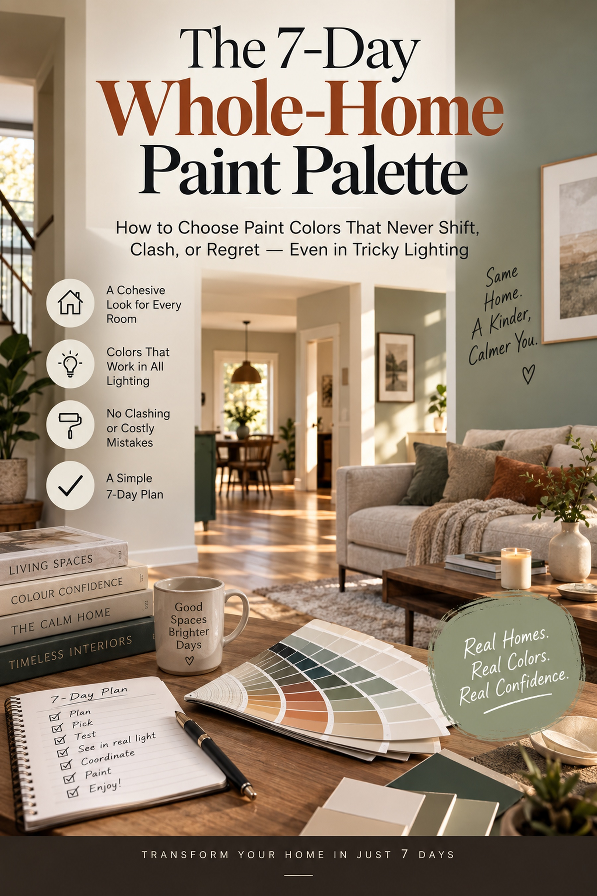
Chapter opener
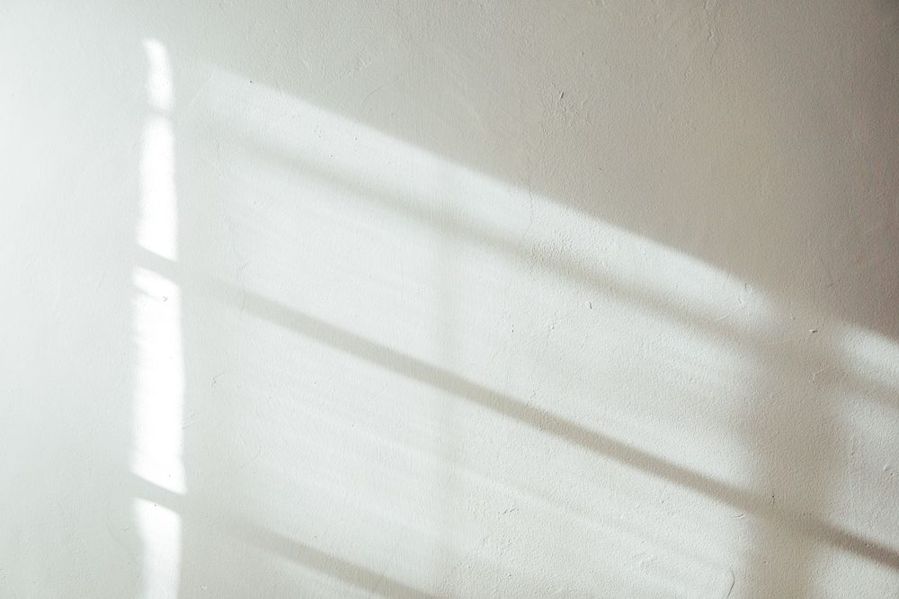
Chapter
Day 1: Audit Your Lighting And Surfaces
Understanding how light and surfaces interact is crucial for creating a cohesive color palette in your home. This chapter focuses on auditing your lighting and surfaces to ensure that the colors you choose remain true to their intended appearance throughout the day and across different lighting conditions. By the end of this audit, you will have a clear understanding of your home's light dynamics and surface influences, setting the stage for confident color choices.
7-Day Plan — Day 1 · Assessing Natural Light
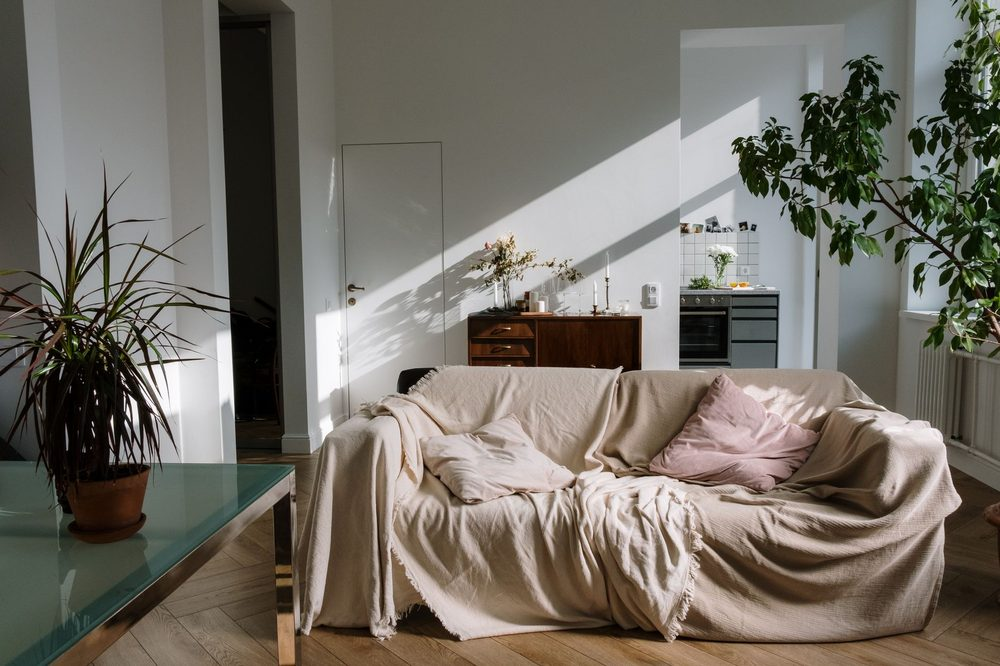
7-Day Plan — Day 1
Assessing Natural Light
In this apartment
Ravi lives in a 1BHK apartment in Pune with a 9-foot living room that has a large window facing west. He notices that his beige walls appear different at various times of the day. To understand this better, he conducts a natural light assessment.
Observe actual daylight in the room. Compass direction is a starting clue, not a law.
This book has two layers. The 7-Day Program is Days 1–7: audit, undertones, shortlist, test, sheens, flow, and lock the palette. Everything after that is a Reference Toolkit — sampling worksheets, troubleshooting, and implementation. Those toolkit pages are not a second Day 1. Color selection is not the same as a paint-ready wall. If a wall has persistent dampness, leakage, mold, efflorescence, or recurring staining, solve the underlying moisture problem before selecting or applying the final paint system. Begin by identifying the primary natural light direction for each room. For Ravi's west-facing living room, he will observe how the light changes from morning to evening. Window orientation is a useful starting clue, but actual daylight should be observed in the room. Latitude, season, time of day, surrounding buildings, glazing, overhangs, climate, and hemisphere can change the result. In Indian apartments, a west window can also bounce heat and street glare. Record what you see at morning, midday, and evening rather than treating compass direction as a universal color predictor.
Over two days, Ravi takes photos of his living room at three different times: morning, midday, and evening. He stands in the same spot each time, ensuring consistency in his observations. By including a sheet of bright white paper taped to the wall, he can accurately assess how the light affects the color of his walls and furnishings.
Ravi notes that in the evening, the beige walls take on a peach hue, which he records. This data collection is crucial for understanding how the light in his apartment influences color perception.
7-Day Plan — Day 1 · Inventorying Artificial Lighting
7-Day Plan — Day 1
Inventorying Artificial Lighting
In this apartment
Ravi notices that his living room has a mix of lighting sources, including a ceiling fixture and a table lamp, but he is unsure how they affect the color of his walls.
Artificial lighting plays a critical role in how colors are perceived in your home.
Ravi begins his audit by logging every fixture in his living room, noting the bulb type, brand, Kelvin temperature, CRI, lumen output, and fixture height. He learns that warm light typically falls between 2700K and 3000K, while daylight bulbs range from 5000K to 6500K. For his living space, he aims for a consistent temperature of 2700K to 3000K to maintain a warm and inviting atmosphere.
He discovers that the ceiling fixture uses a bulb with a CRI of 82. Use high-CRI lighting, such as CRI 90+, where accurate color evaluation or color-critical tasks matter — paint testing, a vanity or mirror, art, and dressing areas. Everyday general lighting does not all need CRI 90+. He upgrades the lamps he uses for testing and the bathroom mirror first.
Ravi also notes the height of each fixture, as this can affect the distribution of light. He records the details in a spreadsheet to keep track of his findings.
7-Day Plan — Day 1 · Cataloging Surface Influences
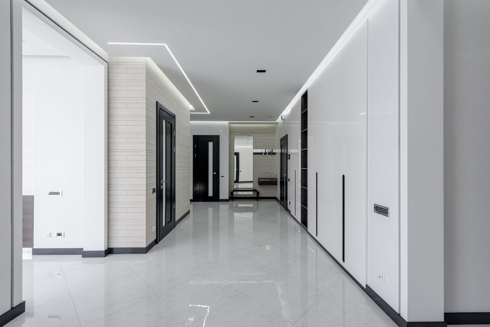
7-Day Plan — Day 1
Cataloging Surface Influences
In this apartment
Ravi's living room features honey oak flooring and a glossy tile accent wall, which he suspects might be affecting the color of his walls.
Fixed surfaces can cast color onto walls and influence overall perception.
Ravi catalogs the surfaces in his living room, noting the honey oak floors and glossy tiles. He learns that honey oak floors can throw warm tones upward, which may be contributing to the peach hue he noticed in the evening. He identifies the undertone families of these surfaces, noting that the warm wood can amplify yellow tones in nearby colors.
He also considers the impact of the glossy tile, which can reflect light and alter the perception of colors on the walls. By documenting these influences, Ravi can make informed decisions about his color choices in relation to the surfaces present in his apartment.
Ravi realizes that large surfaces like floors and tiles have a more significant impact on color perception than smaller accents. He decides to choose wall colors that will balance the warm undertones from the honey oak flooring.
Also diagnose the existing coating, not only the color of nearby floors. Is the paint sound or chalking, peeling, or glossy? Are there water stains, grease, or nicotine? Is the substrate plaster, drywall, concrete, wood, or metal? A color problem and a moisture or adhesion problem are different diagnoses. Do not pick a new color as the fix for an unsound wall.
7-Day Plan — Day 1 · Identifying Problem Zones
7-Day Plan — Day 1
Identifying Problem Zones
In this apartment
After completing his audit, Ravi realizes that certain areas in his apartment consistently push warm or cool tones, particularly in the evening.
Separate color-and-light problems from moisture, mold, and unsound coatings.
Ravi flags areas in his apartment that consistently exhibit color shifts. He notes that the bathroom, with its harsh task lighting, creates a clinical feel, while the living room's evening warmth makes colors appear overly yellow. By identifying these problem zones, he can develop mitigation strategies to address the issues.
He plans to standardize the bulb temperatures across visible rooms to reduce perceived color changes. For the bathroom, lighting is only one variable. Check humidity, ventilation, condensation, and whether the existing coating is sound before you treat a color shift as a bulb problem. If the wall is damp, stained, or moldy, stop and fix moisture. If the wall is dry and sound, warmer, higher-CRI lamps at the mirror can help you read color more honestly — they do not replace a bathroom-suitable paint system.
Ravi also documents any planned fixture changes that could shift light behavior before he finalizes his paint choices. This proactive approach ensures that he addresses potential issues before they arise.
Chapter opener
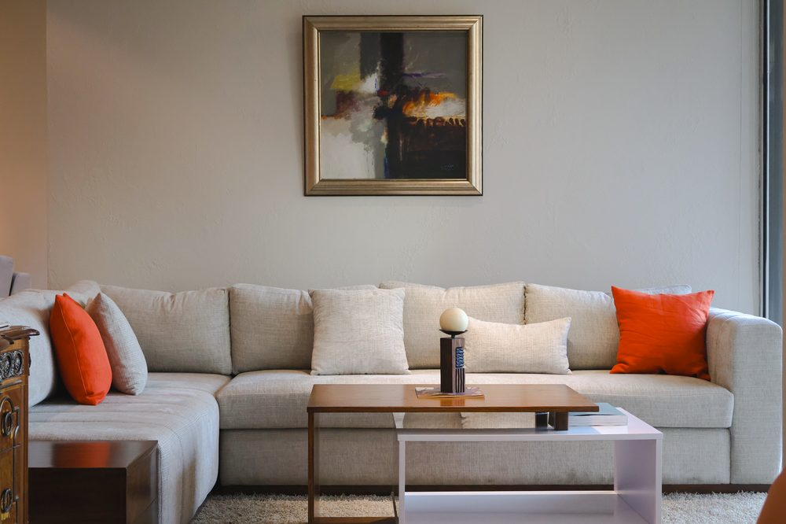
Chapter
Decode Undertones With Confidence
Today, you will transform your observations into a fluent understanding of color undertones. By mastering this skill, you can make informed choices that remain true throughout the day, avoiding the pitfalls of color misjudgment.
7-Day Plan — Day 2 · Understanding Undertones
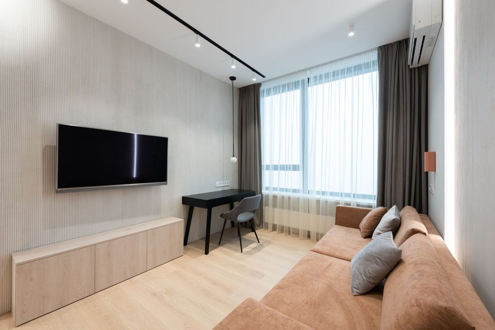
7-Day Plan — Day 2
Understanding Undertones
In this apartment
In a 1BHK apartment in Pune, resident Aditi is frustrated with her beige walls that appear rosy in the evening light. She learns that the context of her warm honey oak floors is influencing her perception of color.
Colors behave differently depending on their context and lighting.
Most paint decisions fail because colors are evaluated in isolation. A beige that looks calm on a chip can turn rosy next to warm wood. A gray may seem safe but can read green against honey oak floors at dusk. Whites are particularly tricky; a white that feels clean in the store can turn cold under bathroom lighting or appear dingy near a south-facing window.
Three main factors contribute to these surprises: context, lighting, and surrounding surfaces. Colors lean one way or another depending on what is beside them, and your lighting shifts throughout the day. Without a clear method to reveal undertones, choosing paint can feel like a gamble.
Understanding these forces allows you to make better choices. By learning to recognize undertones, you can select colors that remain true to their nature in your unique environment.
7-Day Plan — Day 2 · The Undertone Identification System
7-Day Plan — Day 2
The Undertone Identification System
In this apartment
In her Bengaluru rental, Priya sets up a table with a reference neutral gray, a reference white, and a warm white to compare living-room candidates.
Reference gray and reference white are comparison anchors. The three-second look is a perception exercise.
Your system for identifying undertones relies on comparison. Start by assembling a control set of three references: a reference neutral gray, a reference white viewed under a controlled neutral or daylight-like light source, and a warm white with a gentle yellow undertone. These are comparison anchors, not laboratory standards. White paint does not have a Kelvin rating the way a lamp does — do not hunt for a '5000K white paint.' Appearance depends on surrounding colors, lighting, sample size, and the observer.
Next, make quick side-by-side observations. Place a candidate next to one control, look for three seconds, and write down the first word that comes to mind. The three-second observation is a perception exercise, not a diagnostic measurement. Use it to capture your first impression before the longer environmental comparison.
Utilize the folded edge trick by folding the candidate chip so a crisp edge faces the clean white. This sharp plane change intensifies subtle leans that will be visible on your walls, helping you to see undertones more clearly.
7-Day Plan — Day 2 · Testing Undertones in Real Environments
7-Day Plan — Day 2
Testing Undertones in Real Environments
In this apartment
In her Mumbai flat with a window on only one side, Neha tests various whites for her bathroom, noting how they behave under different lighting conditions.
Testing colors under real lighting conditions is essential for accurate results.
To effectively test undertones, set up a table or counter with neutral surroundings and consistent light. Gather your control set and your candidates. Begin by preparing your controls: choose a reference neutral gray that does not read blue, green, or violet beside your reference white, and select a warm white that reads gently sunny, not yellow heavy. These are comparison anchors, not objective laboratory neutrals.
Stage your comparisons by placing the clean white on your table and setting your first candidate beside it. Look for three seconds and write a quick word. That first word is a heuristic, then continue the longer comparison. Repeat this process with the neutral gray and warm white, noting any changes in perception. This will help you identify subtle undertones that may not be immediately apparent.
Finally, test your candidates under different bulbs, such as a lamp at 2700K and an overhead at 3000K. If a color flips from neutral to green or purple, mark it as a shifter. This step is crucial for understanding how your chosen colors will behave in your actual living environment.
7-Day Plan — Day 2 · Room-Specific Color Choices
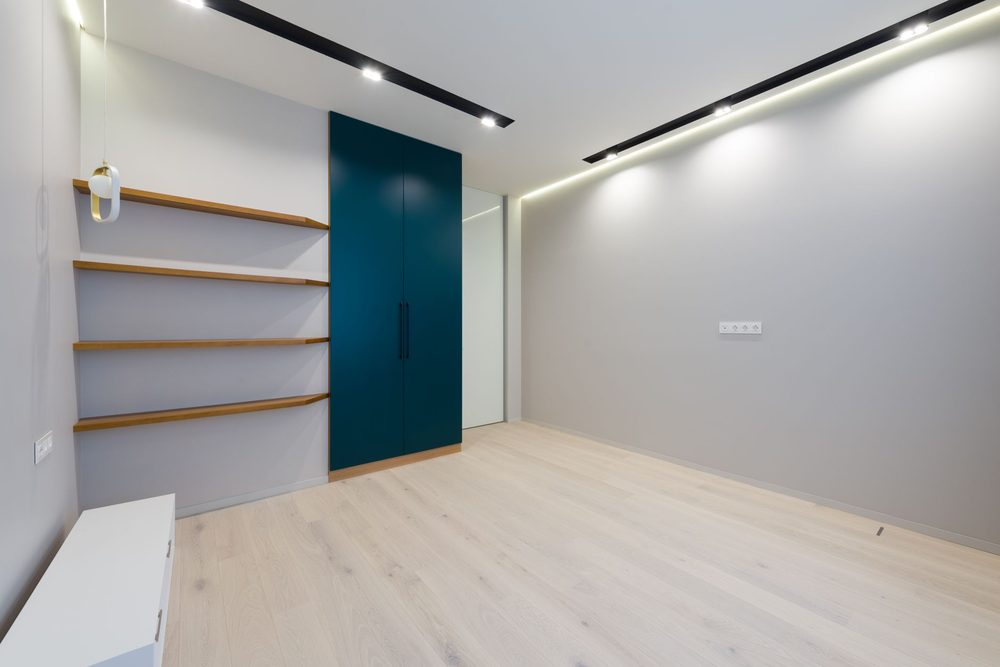
7-Day Plan — Day 2
Room-Specific Color Choices
In this apartment
In her 1BHK in Pune, Aditi tests colors for her living room, ensuring they harmonize with her existing honey oak floors and furniture.
Mapping colors to existing surfaces ensures harmony in your space.
To create a cohesive color palette, map your candidates to key surfaces in your home, such as flooring, counters, and large furnishings. For example, if you are testing a gray with violet undertones, place it beside your honey oak floors to see how it interacts. A gray with violet undertones may clash with warm wood, while a balanced greige can provide a calming effect.
As you test, label your candidates with shorthand codes to track their undertones. For instance, use GY for green-yellow, BV for blue-violet, and GR for gray neutral. This will help you quickly identify which colors work best in your space.
Finally, set guardrails based on your Day 1 audit. Define which undertones you will avoid in each room. For example, if your living room tends to warm up in the evening, you may want to avoid orange-leaning neutrals to maintain a balanced atmosphere.
Chapter opener
Chapter
Day 3: Build Your Shortlist By Room And Function
This chapter focuses on creating a concise shortlist of colors for each room in your home, ensuring that your choices reflect how you live and how your home is lit. By the end, you'll have a strategic selection of colors that enhance cohesion and functionality throughout your space.
7-Day Plan — Day 3 · Why Shortlists Win
7-Day Plan — Day 3
Why Shortlists Win
In this apartment
Ravi lives in a 1BHK apartment in Pune with a 9-foot living room. He often feels overwhelmed by the number of color options available for his walls, which leads to decision fatigue. By creating a shortlist, he can streamline his choices and focus on what truly works for his space.
A concise shortlist prevents decision fatigue and promotes cohesion.
The biggest obstacle to a cohesive home palette is option overload. When you collect endless color chips, you invite undertone collisions and decision fatigue. The result is a palette that looks fine in one corner but problematic in another, or a home that feels disjointed as you move from room to room.
Shortlisting solves this challenge by imposing simple limits and clear roles for each candidate. You focus on stability in your light, harmony with your fixed surfaces, and emotional fit for each room's function. This process protects you from undertone drift and keeps the palette calm and connected.
By creating a shortlist, you can curate a concise roster for each room, making testing faster and choices clearer. This method allows you to choose with the whole home in mind, rather than one wall at a time.
7-Day Plan — Day 3 · The Room And Function Shortlist Method
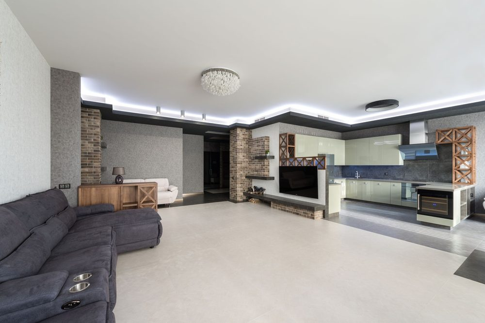
7-Day Plan — Day 3
The Room And Function Shortlist Method
In this apartment
Neha lives in a small apartment in Bengaluru with a load-bearing wall that divides her living room and kitchen. She needs to consider how each color will interact with the limited light and space. By applying the Room and Function Shortlist Method, she can effectively choose colors that enhance her home’s functionality.
Segmenting colors by room function ensures that each space feels appropriate for its use.
Your method is straightforward and powerful. Start with anchors, then segment by function, define your whites, identify accent opportunities, apply layout rules, set quantity limits, and create candidate bundles. This structured approach allows for a more efficient testing process.
Anchors are your core neutral workhorses. Use your light audit and undertone literacy to define anchor criteria. Consider the light reflectance value (LRV) range, undertone bias, and metamerism tolerance to select two or three potential anchors that will provide stability across rooms.
Segment your rooms and rank their needs. For example, bedrooms prefer balanced warmth, while kitchens benefit from neutrals that read clean but not harsh. By tailoring room-specific candidates to what the space needs, you can ensure that each area feels and functions as intended.
7-Day Plan — Day 3 · Define White Standards
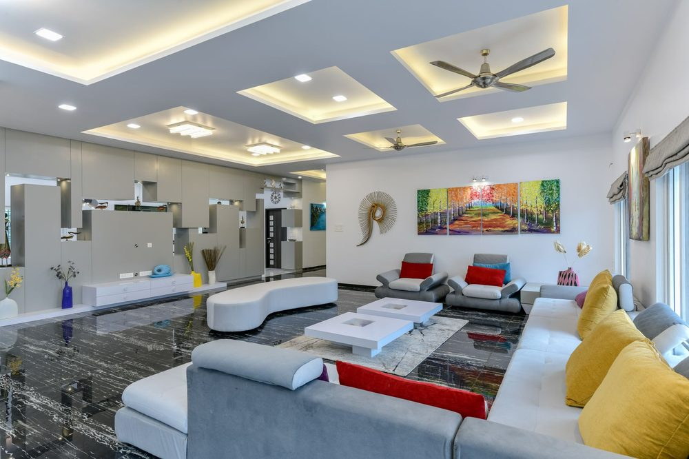
7-Day Plan — Day 3
Define White Standards
In this apartment
Anjali has a Mumbai flat with a window on only one side, making it crucial for her to choose whites that will enhance the limited light. By defining her white standards early, she can ensure that the trim and ceiling colors complement her chosen wall colors effectively.
Trim and ceiling whites are essential for framing your color choices and ensuring cohesion.
Trim and ceiling whites are the quiet scaffolding of your palette. A trim white should be clean and balanced, not chalky or creamy under your specific bulbs. A ceiling white should be soft enough to reduce glare, especially in spaces with limited light.
Anjali decides to add one or two trim candidates and two ceiling candidates to her shortlist. Testing them with her anchors and accents ensures that the junctions look deliberate and cohesive.
Choosing whites early in the process can prevent issues later on, as they can ruin an otherwise perfect wall color if not considered in relation to the overall palette.
7-Day Plan — Day 3 · Identify Accent Opportunities
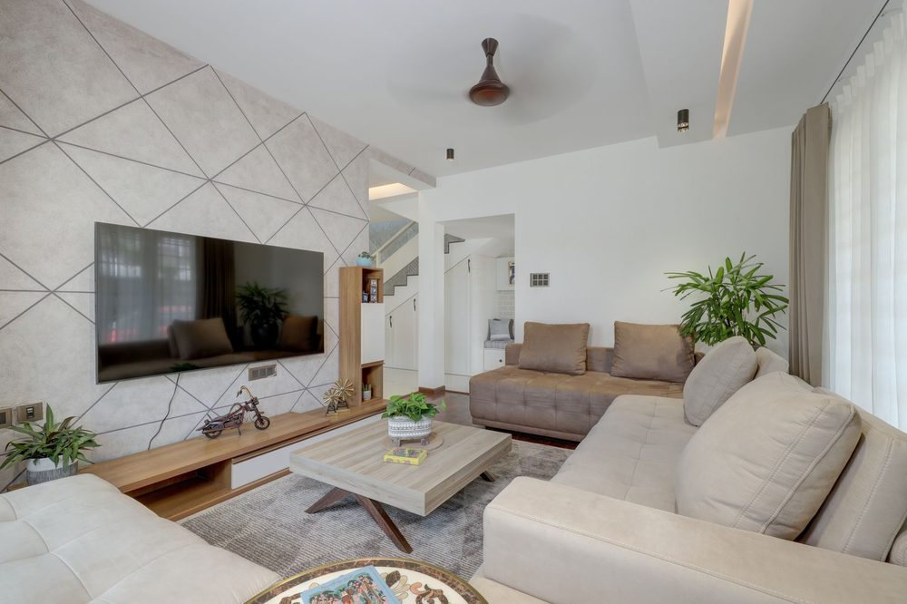
7-Day Plan — Day 3
Identify Accent Opportunities
In this apartment
Karan's apartment in Delhi features an open living space that connects to his dining area. He wants to add personality without overwhelming the space. By identifying accent opportunities, he can choose colors that enhance the overall design without clashing.
Accents should enhance the overall design while providing controlled doses of personality.
Accents express personality while your anchors provide unity. Karan considers where deeper hues make sense, such as a feature wall in the living room or a bold color for his front door. He keeps saturation in check for rooms visible from main areas to maintain cohesion.
He selects three to five accent candidates that echo undertones already present in his fixed surfaces. For example, if his living room has warm wood tones, a muted terracotta might feel harmonious without overwhelming the space.
Using deeper hues in contained spaces where they do not clash across sightlines allows Karan to add character to his home while keeping the overall palette calm and connected.
Chapter opener
Chapter
Day 4: Test Large Samples And Control Variables
In this chapter, you will transition from theory to practice by testing large paint samples under controlled conditions. This process will help you understand how colors behave in your specific space, ensuring that your final choices are informed and confident.
7-Day Plan — Day 4 · Understanding the Importance of Large Samples
7-Day Plan — Day 4
Understanding the Importance of Large Samples
In this apartment
Riya lives in a 1BHK apartment in Pune with a 9-foot living room. She has shortlisted several paint colors for her walls but is unsure how they will look in the actual space. By testing large samples, she aims to see how the colors interact with her furniture and lighting throughout the day.
Large samples help only if the substrate and coat system are reasonably like the real wall.
Small paint chips can be misleading, as they fail to capture the true essence of a color when applied to a wall. A three-inch chip cannot reveal how undertones shift or how light interacts with the surface. By using larger samples, you can observe the color in various lighting conditions and see how it complements or clashes with other elements in the room.
Inconsistent testing conditions can lead to paint regrets. For example, if one sample is tested under warm light and another under cool light, the same color may appear entirely different. To avoid this, ensure that all samples are tested in the same lighting conditions, ideally during the same time of day to account for natural light changes.
To effectively test your colors, apply samples that are at least 2 feet by 2 feet on your walls. This size allows you to see how the color behaves in the context of the entire room, rather than just a small patch. Observe the samples at different times of the day to understand how they change with the light.
For the most reliable test, use a sample surface with a finish and primer system reasonably similar to the actual wall. A color tested on a perfectly smooth white board may appear different on textured or previously painted walls, plaster, patched areas, or primed drywall. Apply the number of coats the manufacturer intends; two coats is a useful default for comparison when the product system calls for it.
Before you move on
Choose at least three large samples of your shortlisted colors.
Apply samples on a wall that receives natural light throughout the day.
Observe the samples at different times to see how they change under varying light conditions.
7-Day Plan — Day 4 · Controlling Variables During Testing
7-Day Plan — Day 4
Controlling Variables During Testing
In this apartment
Amit, residing in a Bengaluru rental with a load-bearing wall, is testing paint colors for his living room. He sets up a consistent testing environment by ensuring that the same light source is used for all samples, avoiding any discrepancies in color perception.
Controlling variables during testing ensures that your observations are accurate and reliable.
To achieve reliable results, it is crucial to control the variables during your testing. This means using the same light source for all samples. If you have multiple light fixtures, choose one and stick with it throughout the testing process. This consistency will help you accurately assess how each color looks under the same conditions.
Additionally, avoid testing colors on walls that have existing colors or patterns that could influence your perception. If possible, paint a clean, white area on the wall where you can apply your samples. This will allow you to see the true color without any interference from the underlying surface.
Document your observations meticulously. Take notes on how each color appears at different times of the day and under various lighting conditions. This documentation will be invaluable when making your final decision.
Before you move on
Use the same light source for all samples during testing.
Test on a clean, white area of the wall to avoid color interference.
Document your observations for each color at different times of the day.
7-Day Plan — Day 4 · Ranking Your Color Choices
7-Day Plan — Day 4
Ranking Your Color Choices
In this apartment
Neha, who lives in a Mumbai flat with a window on only one side, has tested her paint samples and is now ready to rank her favorites based on their performance in her unique lighting conditions.
Ranking your color choices helps you make an informed decision based on practical observations.
After testing your large samples, it’s time to rank them based on your observations. Consider how each color looks at different times of the day and how it interacts with your furnishings and decor. Make a list of your favorites and note any specific times when certain colors shine or fall flat.
Pay attention to how the colors make you feel in the space. Some colors may appear beautiful during the day but feel too dark or overwhelming at night. Your emotional response is just as important as the visual aspect when selecting a paint color.
Once you have your rankings, narrow it down to your top two or three choices. If possible, live with these colors for a few days before making a final decision. This will give you a better sense of how they will feel in your home over time.
Before you move on
Create a ranking system for your color samples based on observations.
Consider emotional responses to each color in the space.
Narrow down to your top two or three choices and live with them for a few days.
Chapter opener
Chapter
Color Testing for Indian Homes
Understanding how to test paint colors effectively can transform your living space. This chapter provides a structured approach to color testing, ensuring you select the perfect shades for your home.
Toolkit · The Framework for Color Testing
Toolkit
The Framework for Color Testing
In this apartment
Riya lives in a 1BHK apartment in Pune with a 9-foot living room. She wants to repaint her walls but is unsure about the colors that will work best with her existing furniture and lighting.
A structured framework helps in selecting the right paint colors objectively.
Start with the right medium. Use foam boards or poster boards around 24 by 36 inches to provide enough area to see undertones and Light Reflectance Value (LRV), which describes how much light a color reflects. Bigger boards are better for accurate assessment. Apply the number of coats needed to represent the manufacturer's intended finish; two coats is a useful default for comparison when the product system calls for it. Extend to the edges to avoid white borders. A small roller creates a more even film than a brush. For the most reliable test, use a sample surface with a finish and primer system reasonably similar to the actual wall. A color tested on a perfectly smooth white board may appear different on textured, plastered, patched, or previously painted walls. Follow the recoat time on the can so you are not judging a wet film.
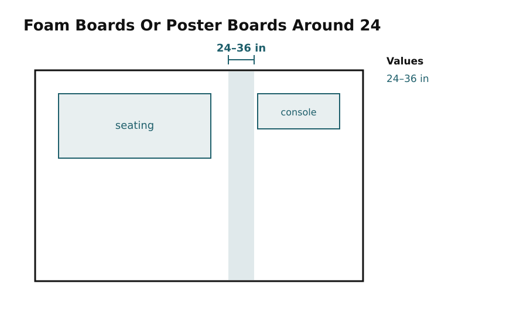
Foam boards or poster boards around 24 by 36 inches provide enough area to see undertones and Light Reflectance Value.
Label each board clearly in the bottom corner with the color name, brand, undertone shorthand, LRV, and any helpful notes, such as room target or pairing ideas. If you can sample in your preferred brand, do that, as formulas differ across brands. If you cannot access the exact brand, note that you are using an approximation and plan to verify later with a sample in the final brand before purchasing gallons.
Control adjacency. Colors change when placed against different backgrounds because your eye adapts to surrounding colors. To create a fair test, place boards against a neutral backdrop. A clean white wall works if it is truly neutral. You can also tape a large sheet of white paper or a white painter's drop cloth to the wall as a temporary backdrop.
Toolkit · Testing Colors Over Time
Toolkit
Testing Colors Over Time
In this apartment
Vikram, who lives in a rental in Bengaluru, has a load-bearing wall that limits his options for color. He needs to ensure the color he chooses looks good throughout the day.
Observing colors at different times of the day reveals their true character.
Set time windows for your tests. Undertones often reveal themselves at different times of day. View each board at a minimum of three points: morning, midday, and evening. Use your Day 1 bulb standard so artificial light conditions are consistent. If you have not standardized bulbs yet, set your intended final setup now, including color temperature and high color rendering index where critical. Do not change bulbs between observations. In west-facing rooms, watch how colors warm at sunset. In north-facing rooms, check that colors do not flatten or skew cool in the dimmer natural light.
Embrace the corner test. Place your boards in inside corners, outside corners, and near the ceiling line. Corners exaggerate shadow and can push a color's undertone to the edge. If a gray flashes purple on the inside corner, that is useful information. If a beige reads oddly pink where a ceiling meets a wall, that might affect whether you use it in a room with heavy angles or sloped ceilings.
Compare anchors head to head. Your anchor neutrals carry your home's flow, so they must be stable. Place two anchor candidates side by side in your toughest light condition. Watch for stability throughout the day. You are looking for the sample that holds the same character while its competitor drifts warmer or cooler.
Toolkit · Finalizing Your Color Choices
Toolkit
Finalizing Your Color Choices
In this apartment
Anjali is redecorating her Mumbai flat, which has a window on only one side. She needs to ensure her chosen colors work well with the limited natural light.
Documenting your observations helps in making informed decisions.
Test whites in context. Whites are relative. A trim white that looks clean alone can appear dingy next to a cool quartz or too stark against a warm oak floor. Paint smaller boards for trim and ceiling whites and place them touching your anchor boards. Look at the junction. Does the trim read crisp or dirty where it meets the wall color? Does the ceiling white glow with glaring brightness under recessed downlights or feel gentle and diffused?
Include sheen trials. Sheen changes how light bounces. On one portion of a wall color board, roll a strip in the sheen you expect for that room, such as eggshell in a hallway or satin in a bath. Keep the rest in matte. View the difference at your time windows. In high reflectance zones with lots of glazing or strong downlights, higher sheen can amplify undertones. In low reflectance zones, too matte can make a color feel dead.
Run the evening stress test. Dim lights to your typical cozy level and check again. Some colors collapse under low light. Others glow and look richer. Decide if a shift is acceptable or a deal breaker. A subtle warmth in a bedroom might be perfect at night, while an orange cast in an open living area that connects to other spaces might destroy cohesion.
Chapter opener
Chapter
Implementation Toolkit: Color Sampling
This is part of the Reference Toolkit, not a second Day 4. Use it while you run 7-Day Plan — Day 4 (test large samples). It does not restart the week.
Toolkit — sampling · Gathering Your Materials
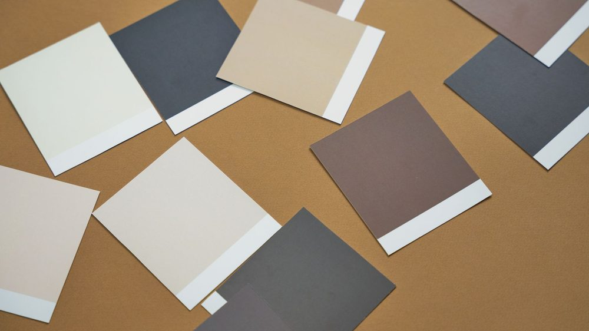
Toolkit — sampling
Gathering Your Materials
In this apartment
In a 1BHK in Pune, Riya prepares for her color sampling day by gathering all necessary materials. She lays out four foam boards on her dining table, each measuring at least 24 by 36 inches, ready to be painted with her chosen color samples.
Preparation is key to an efficient color sampling process.
Start by gathering four to six foam or poster boards that are at least 24 by 36 inches in size. This size allows for ample space to apply paint samples and see how they look in your room's lighting.
Gather Materials, Four To Six Foam Or Poster Boards
You will also need a small roller and tray for applying the paint, painter's tape to create clean edges, and a quart of each sample color you wish to test. Don't forget a permanent marker for labeling your boards and two smaller boards for the trim white and accent colors.
Having all your materials ready will streamline the process and help you focus on the important task of color selection.
Toolkit — sampling · Painting Your Samples
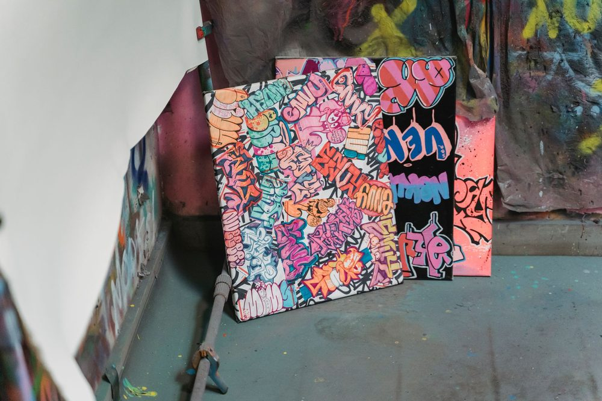
Toolkit — sampling
Painting Your Samples
In this apartment
In her Bengaluru rental, Kavya rolls the first coat onto boards whose primer system is reasonably like her walls, then waits for the recoat window.
Applying samples correctly is crucial for accurate color evaluation.
Begin by rolling the first coat of each color onto your large foam boards. Make sure to apply the paint evenly and allow it to dry as directed on the paint can. This step is essential for achieving the true color and finish of the paint.
After the first coat has reached the manufacturer's recoat time, apply the next coat if the system calls for it. Two coats is a useful default for comparison, not a law that overrides the can. For the smaller boards designated for trim and ceiling whites, apply the same process to get a clear idea of how these colors will look in your space.
On your wall samples, add a vertical strip of your intended sheen for that room. This will help you visualize how the sheen interacts with the color and lighting in your apartment.
Toolkit — sampling · Labeling Your Boards
Toolkit — sampling
Labeling Your Boards
In this apartment
In her Mumbai flat, Meera labels each of her painted boards with the color name, brand, and other important details, ensuring she can easily remember her choices later.
Proper labeling helps in making informed decisions later on.
Once your paint samples are dry, it’s time to label each board. Use a permanent marker to write down the color name, brand, undertone shorthand, Light Reflectance Value (LRV), and the room you are targeting for each color sample.
Additionally, add a small square on each board for your final verdict later. This will help you keep track of which colors you liked and which ones did not perform well in your space.
Labeling your boards not only keeps your sampling organized but also aids in the decision-making process when you are ready to choose your final colors.
Toolkit — sampling · Setting the Stage
Toolkit — sampling
Setting the Stage
In this apartment
In her cozy 1BHK in Pune, Riya creates a neutral backdrop for her color samples, ensuring they are displayed at eye level for the best evaluation.
A neutral backdrop enhances the visibility of your color samples.
To effectively evaluate your color samples, create a neutral backdrop or a white buffer zone in the room where you plan to paint. This will help you see the colors more clearly without any distractions from surrounding decor or furnishings.
Place your boards at eye level to ensure you are viewing them from the perspective you will have when the colors are on your walls. If you are testing colors for multiple rooms, rotate the boards to each space throughout the day to see how the colors interact with different lighting conditions.
By setting the stage properly, you will have a better understanding of how the colors will look in your actual living environment.
Chapter opener
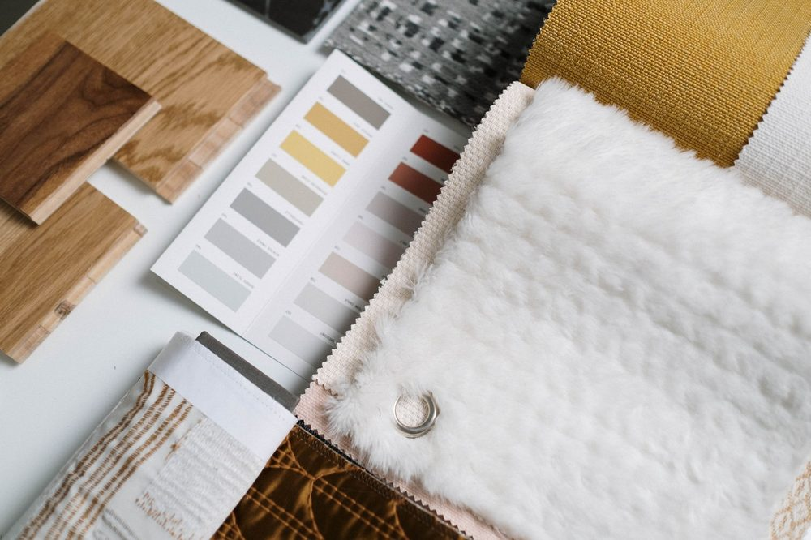
Chapter
Testing Paint Colors in Your Space
Understanding how paint colors change throughout the day is crucial for achieving the desired atmosphere in your home. This chapter guides you through the process of testing paint colors effectively, ensuring that your final choice complements your space at all times.
Toolkit · Observe Your Color Samples
Toolkit
Observe Your Color Samples
In this apartment
In her 1BHK in Pune, Riya set up her paint boards in her 9-foot living room. She observed the boards at morning, midday, and evening, noting how the colors shifted with the light.
Consistent observation is key to understanding color behavior.
Observe each board at morning, midday, and evening to see how the colors change with the light. Pay special attention to corner placements and how colors interact with whites in the room. This will help you gauge the overall mood and stability of the colors throughout the day.
For the evening stress test, dim the lights to see how the colors hold up under lower illumination. This is crucial as the ambiance of a room can drastically change with different lighting conditions, affecting your perception of the color.
Record your impressions by taking photos at each view and writing two or three word notes directly on painter's tape on the back of each board or in a notebook. Keeping your observations consistent will help you make informed decisions later.
Before you move on
Check each board at morning, midday, and evening.
Note corner placements and interactions with whites.
Perform an evening stress test with dimmed lights.
Toolkit · Compare and Contrast
Toolkit
Compare and Contrast
In this apartment
In her Bengaluru rental, Priya placed her anchor color candidates side by side in her living room, which had a load-bearing wall that limited light.
Side-by-side comparisons reveal the true nature of colors.
Place your anchor candidates side by side in the toughest light setting of your room. This will allow you to see how they interact with each other and the space around them. For example, if you have a warm beige and a cool taupe, observe how they look next to each other in the same light.
Do the same for whites against your anchor colors. This comparison is essential as whites can significantly affect the perception of your chosen colors, especially in a room with limited natural light.
Take notes on how each color looks in relation to the others, and be mindful of any shifts in hue or tone that may occur under different lighting conditions.
Before you move on
Place anchor candidates side by side in tough light settings.
Compare whites against anchors.
Take detailed notes on color interactions.
Toolkit · Decide on Your Final Choices
Toolkit
Decide on Your Final Choices
In this apartment
In her Mumbai flat, Anjali faced a challenge with a window on only one side, affecting how colors appeared throughout the day.
Make informed decisions based on stability and mood criteria.
After observing and comparing your colors, it's time to decide which ones to keep. Remove any boards that do not meet your stability or mood criteria. This is crucial, especially in a room like Anjali's, where limited light can skew color perception.
Circle or star the winners in your notes. If you find yourself with a tie between two colors, keep both options for further evaluation on Day 5 when you'll decide on sheens and finishes.
Schedule your day so that drying times and light windows align. For instance, paint in the early morning, observe by late morning, photograph at midday, and move boards to corners in the afternoon for evening testing.
Before you move on
Remove boards that fail stability or mood criteria.
Circle or star your winning colors.
Keep ties for further evaluation on Day 5.
Chapter opener
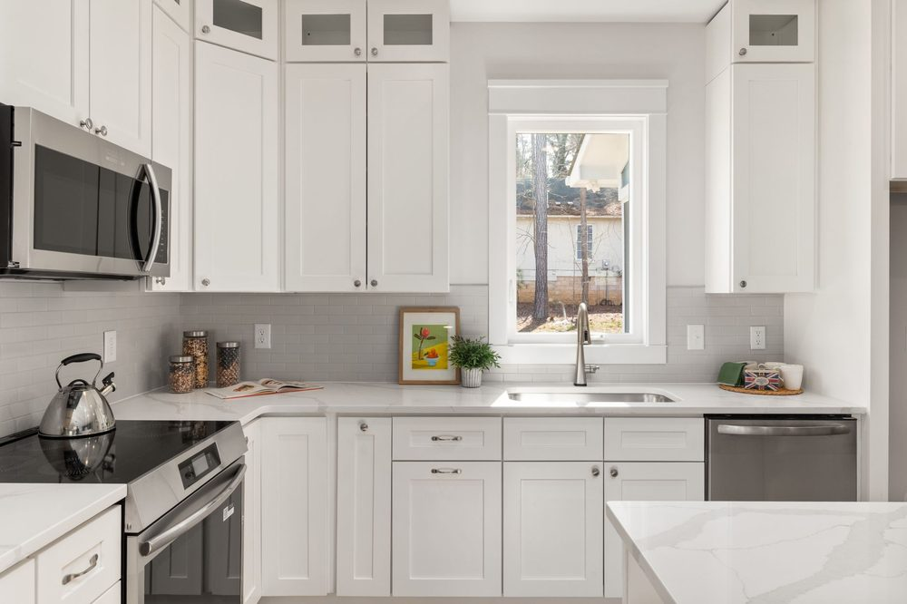
Chapter
Understanding Color in Home Decor
Choosing the right colors for your home can be a complex task, especially when considering how different lighting and surrounding colors affect perception. This chapter dives into practical strategies for selecting paint colors that harmonize with your space, ensuring you avoid common pitfalls and achieve a cohesive look throughout your home.
Toolkit · The Importance of Context
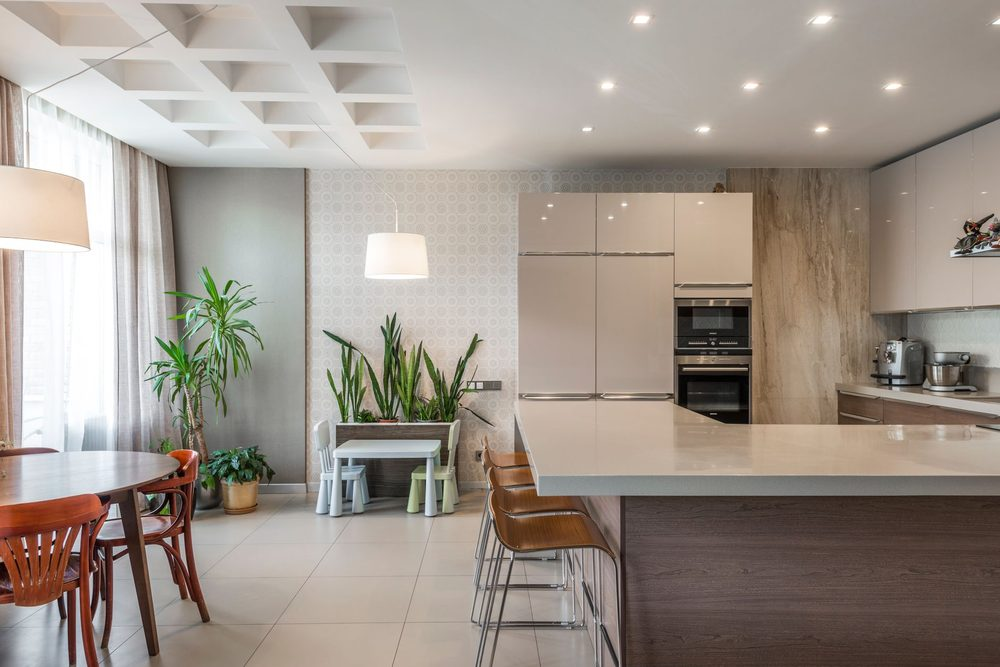
Toolkit
The Importance of Context
In this apartment
Sofia, living in a 1BHK in Mumbai, faced a dilemma when choosing a trim color for her kitchen. She loved bright whites but found that they clashed with her cool white quartz countertops and stainless steel appliances, making the trim appear dirty.
Color perception is influenced by context and lighting.
Sofia decided to test a variety of trim whites against her kitchen's existing colors. By placing large samples next to her quartz and appliances, she could see how each color interacted with the surrounding elements. This head-to-head comparison allowed her to identify a softer, neutral white that complemented her kitchen without the chalky glare of the brighter option.
The key takeaway from Sofia's experience is the importance of testing colors in context. A bright white may seem appealing in isolation but can appear dull or dirty when placed next to cooler tones. By experimenting with larger samples, homeowners can avoid costly mistakes and ensure their chosen colors enhance the overall aesthetic of their space.
Lighting also plays a crucial role in color perception. Sofia noted that her kitchen looked different at various times of the day. Morning light brought out the warmth in her chosen trim, while evening light highlighted its cool undertones. This realization reinforced the need to view colors in different lighting conditions before making a final decision.
Toolkit · Avoiding Common Pitfalls
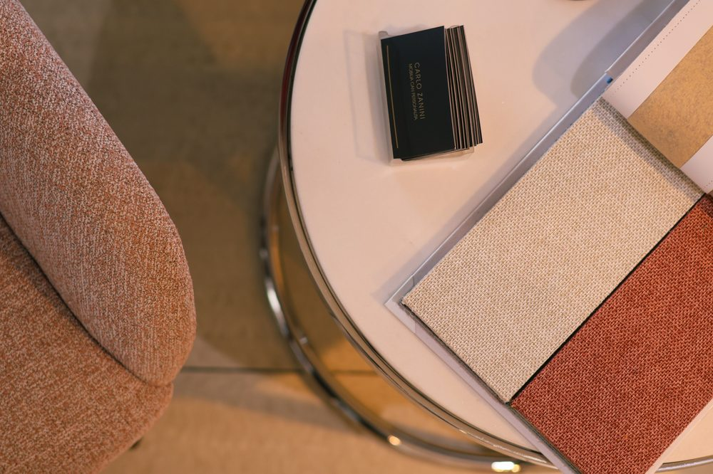
Toolkit
Avoiding Common Pitfalls
In this apartment
In a Bengaluru apartment, Ravi was excited to paint his living room but made several mistakes that affected his final choice. He tested colors against a colored wall without a white buffer, leading to skewed perceptions of the shades.
Match brand, product line, color code, base, and sheen. Names alone are not a match.
Ravi's first mistake was testing paint samples directly on his colored walls. This practice can shift perception, making colors appear different than they would on a white surface. To avoid this, always use a white buffer when testing new colors, as it provides a neutral backdrop that allows for a clearer view of the paint's true tone.
Another error was skipping a second coat on his samples. Single coat applications can appear uneven and may not accurately reflect the paint's final appearance. Apply the coats the product system intends. Two coats is a useful default for comparison when the system calls for it, especially under different lighting.
Ravi also mixed brands between his samples and the final gallons, which resulted in unexpected differences in color and finish. To maintain consistency, match brand, product line, color code, base, and sheen for samples and the final cans. The same color name or code can still look different if the product line, base, or sheen changes — especially with whites and pale colors.
When you cannot buy the original paint — a discontinued product, a builder color, or a new brand — do not rely on the color name. Take a physical chip or a wall scraping where it is safe to do so, have it matched, and test the matched product on a large sample. Do not assume the match is exact.
Chapter opener
Chapter
Mastering Color Testing in Small Spaces
Understanding how to test colors effectively in your home can transform your space. This chapter focuses on practical techniques to ensure you choose the right colors for your walls, especially in the unique lighting conditions of Indian apartments.
Toolkit · The Importance of Testing Colors in Corners
Toolkit
The Importance of Testing Colors in Corners
In this apartment
Riya lives in a 1BHK apartment in Pune with a 9-foot living room. She wants to paint her walls a soft beige but is unsure how it will look in different lighting conditions. Riya decides to test her color choices in the corners of her living room to get a true sense of how the colors will appear throughout the day.
Corners amplify undertones and can reveal surprises in color choices.
When testing colors, it’s crucial to avoid relying solely on phone photos. While they can serve as memory aids, they often fail to capture the true essence of a color due to auto-adjustments that flatten differences. Instead, use large format boards to reveal undertones and lightness more honestly than tiny chips.
Riya sets up her color boards in the corners of her living room, where the light hits differently. She observes the colors at various times of the day—morning, midday, and evening—to see how they change with the light. This method helps her understand how the colors will interact with her space under different lighting conditions.
To simulate true conditions, Riya runs an evening stress test by dimming the lights and observing how the colors hold up. This step is vital in ensuring the colors remain stable and harmonious in her living environment.
Toolkit · Documenting Your Color Choices
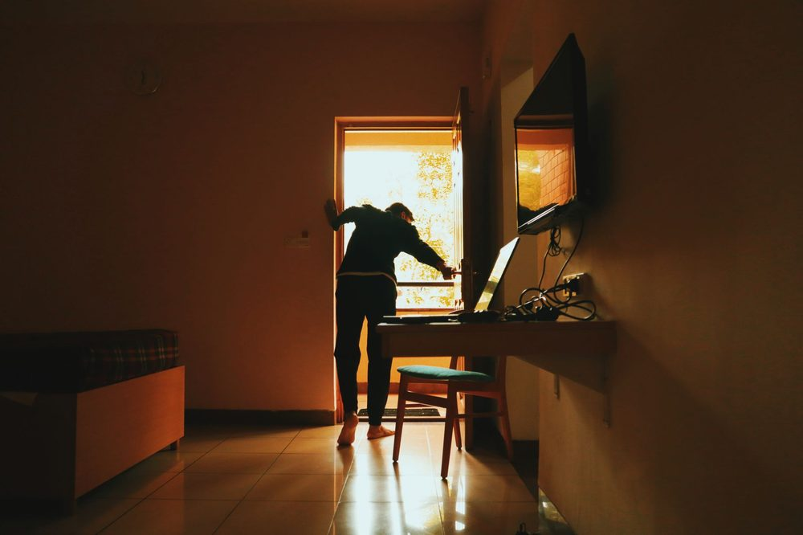
Toolkit
Documenting Your Color Choices
In this apartment
In her quest to find the perfect shade, Riya documents her color tests using concise words and consistent photos. This helps her compare her options effectively.
Documenting with consistent photos and notes makes comparisons fair and fast.
Riya takes photos of each color in the same lighting conditions to ensure consistency. She notes the time of day and the specific lighting conditions for each shot. This documentation allows her to compare colors side by side without confusion.
In addition to photos, Riya writes down her impressions of each color. She describes how each shade feels in the space and whether it complements her furniture and decor. This written record is invaluable when it comes time to make a final decision.
By eliminating colors that do not perform well under her specific lighting conditions, Riya confidently narrows her choices to those that remain stable and harmonious. This process not only saves time but also ensures she selects a color that will enhance her living space.
Toolkit · Comparing Anchor Neutrals
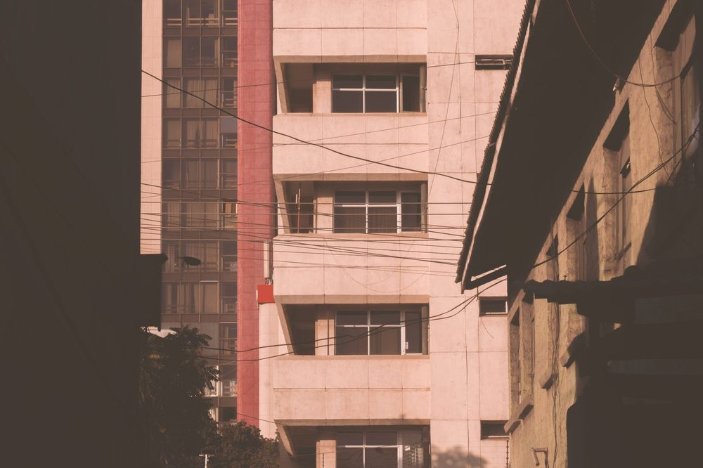
Toolkit
Comparing Anchor Neutrals
In this apartment
Riya has narrowed down her choices to a few anchor neutrals. She decides to compare them head to head in her living room's challenging light.
Comparing anchor neutrals in your most challenging light is essential for selecting a stable performer.
Riya selects a few anchor neutrals that she believes will work well in her space. She places them side by side in the corner of her living room, where the light is most challenging. This allows her to see how each color interacts with the light and the other colors.
As she observes the colors, Riya notes that some shades appear warmer or cooler depending on the time of day. This reinforces the importance of testing whites and neutrals in context, as they are relational and not absolute.
After thorough comparison, Riya identifies the neutral that remains consistent throughout the day, ensuring it will provide a stable backdrop for her decor. This final decision is crucial for creating a harmonious living environment.
Chapter opener
Chapter
Color Testing for Your Home Palette
Understanding how colors interact in your space is crucial for creating a harmonious home. This chapter guides you through the process of testing and finalizing your color palette, ensuring your choices are informed and effective.
Toolkit · Preparing Your Color Boards
Toolkit
Preparing Your Color Boards
In this apartment
Aditi lives in a 1BHK apartment in Pune with a 9-foot living room. She decides to test colors for her living room walls and ceiling. Aditi purchases four boards measuring 24 by 36 inches and smaller boards for whites. She selects a few wall colors she likes and buys quarts of each, along with sample sizes of trim and ceiling whites.
Start with a solid foundation of color boards to visualize your palette.
Buy or cut four to six boards at least 24 by 36 inches, ensuring you have smaller boards for whites. This size allows you to see how colors will appear on a larger scale, which is crucial for making informed decisions.
Purchase quarts of your shortlisted wall colors and sample sizes of trim and ceiling whites. This variety will help you compare how different colors interact with each other and the space around them.
Set and verify your Day 1 lighting standard, including bulb type, color temperature, and CRI. The lighting in your room can drastically change how colors appear, so it’s important to test under the same conditions you’ll have once the paint is applied.
Before you move on
Buy four to six boards at least 24 by 36 inches.
Purchase quarts of shortlisted wall colors.
Get sample sizes of trim and ceiling whites.
Set your Day 1 lighting standard.
Toolkit · Applying Your Color Samples
Toolkit
Applying Your Color Samples
In this apartment
In her Pune apartment, Aditi applies the coats the product system calls for on each large board, then adds a sheen strip where relevant.
Match coats and substrate to the intended wall system; two coats is a useful default when the product calls for it.
Apply the number of coats needed to represent the manufacturer's intended finish; two coats is a useful default for comparison when the product system calls for it. Also match substrate as closely as you can: a smooth white board is not the same as textured or previously painted plaster.
Add a sheen strip where relevant to see how different finishes affect the color. Sheen can enhance or mute a color, so it’s important to see how it interacts with the light in your space.
Create a neutral test backdrop or a white border around your boards to control adjacency. This helps isolate the colors and allows you to see them without distraction from other hues.
Before you move on
Apply the coats the product system calls for; two is a useful default.
Add sheen strips where relevant.
Create a neutral test backdrop.
Toolkit · Evaluating Your Color Choices
Toolkit
Evaluating Your Color Choices
In this apartment
Aditi schedules three observation windows throughout the day to see how the colors change with the light. She takes photographs of each board at each view and notes her impressions.
Observe how colors change under different lighting conditions.
Schedule three observation windows today to assess how the colors look at different times of the day. This will help you understand how natural light affects your chosen hues.
Photograph each board at each view to document your observations. Write two or three word impressions for each color to capture your initial thoughts and feelings about them.
Compare anchors side by side and whites against anchors, then eliminate poor performers. This process will help you narrow down your choices to the colors that truly resonate with you.
Before you move on
Schedule three observation windows.
Photograph each board at each view.
Compare anchors side by side.
Chapter opener
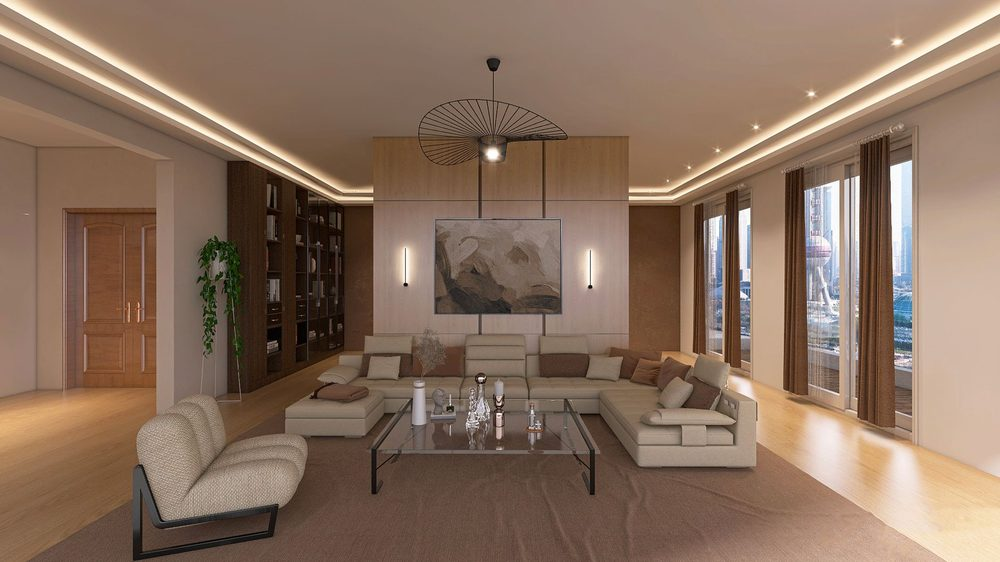
Chapter
Day 5: Choose Trim, Ceiling, Doors, And Sheens
In this chapter, you will solidify the finishes that complement your wall colors and enhance your living spaces. By understanding how trim, ceilings, doors, and sheens interact with light, you can create a harmonious environment that feels intentional and cohesive.
7-Day Plan — Day 5 · Trim Sets The Rhythm
7-Day Plan — Day 5
Trim Sets The Rhythm
In this apartment
In a 1BHK apartment in Pune, resident Priya has chosen a warm greige for her living room walls. However, the existing trim white appears bluish under evening light, making the walls look muddy. She needs to select a trim that complements her wall color without altering its appearance.
The right trim white can enhance or detract from your wall colors depending on the lighting.
Trim frames every wall and creates contrast, defining lines in your space. For Priya's living room, she should test two trim whites: a clean neutral white and a soft neutral white. The clean white works well in rooms with stable bulbs, while the soft white is ideal for warm bulb settings, ensuring it doesn’t appear icy at night.
To find the perfect trim, Priya should hold her wall sample against the trim white in a corner under evening light. If the trim looks bluish and the wall appears gray, the white is too cool. Conversely, if the trim looks too creamy, it may dull the wall color. The goal is to find a trim that feels crisp yet gentle, either slightly brighter than the ceiling for contrast or matching it for a seamless look.
Once she identifies the right trim, she can proceed to select a ceiling white that complements it. This will help maintain a cohesive look throughout the room.
7-Day Plan — Day 5 · Ceilings Manage Reflectance
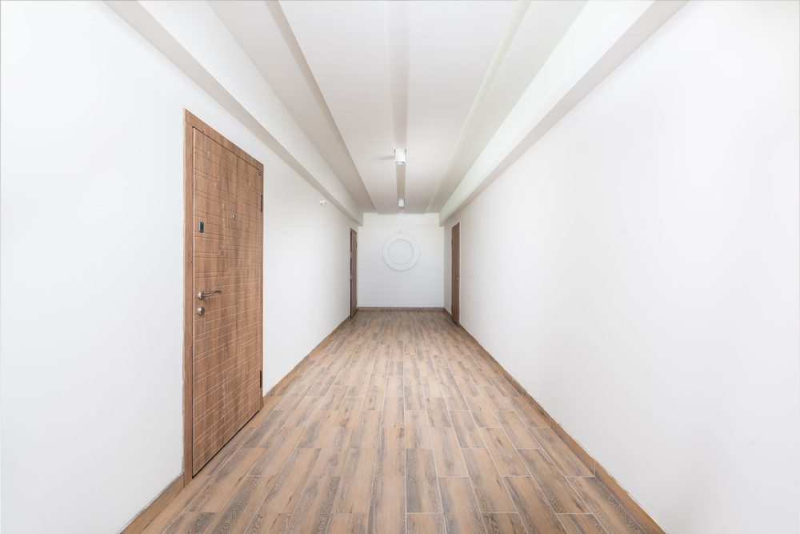
7-Day Plan — Day 5
Ceilings Manage Reflectance
In this apartment
In a Bengaluru rental with a load-bearing wall, resident Arjun has noticed that the ceiling color affects the overall brightness of his living area. The strong overhead lights create glare, making the space feel uncomfortable.
Ceiling color and sheen significantly influence the light reflectance in a room.
Ceilings are crucial light reflectors, and their color can dramatically affect how the room feels. For Arjun, selecting a ceiling white that softens glare is essential. If the ceiling is too bright, it can create harsh reflections on the walls, making the room feel uninviting.
Arjun should conduct a test by holding his ceiling white sample under the strongest overhead lights. If the ceiling creates glare, it’s advisable to choose a softer white and avoid high sheen finishes. Many homeowners find that flat or matte ceilings work best to minimize glare, especially in lower-height rooms.
In open concept areas, maintaining a single ceiling white helps keep sightlines calm. If Arjun's living area is enclosed, he can reuse the ceiling white unless a specific condition calls for a different balance.
7-Day Plan — Day 5 · Doors Influence Sightlines
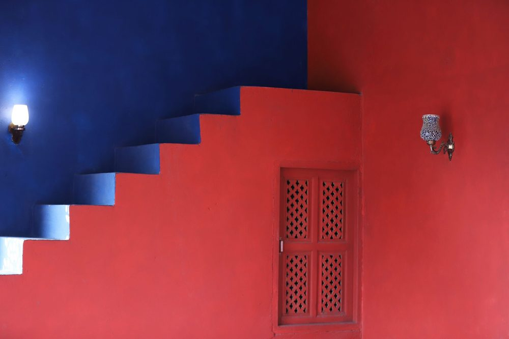
7-Day Plan — Day 5
Doors Influence Sightlines
In this apartment
In a Mumbai flat with a window on only one side, resident Meera wants to ensure her doors complement the overall aesthetic of her home. She has multiple doors visible from the main living area and is considering different colors.
Matching door colors to trim creates visual cohesion throughout your home.
Doors serve as punctuation points in your home, and their colors can significantly impact sightlines. For Meera, matching her doors to the trim will create a cohesive look, especially in open views. If she opts for a character color, it should harmonize with her anchors and trim white.
Meera should test the door color next to the trim and wall to ensure the edge relationship feels deliberate. If multiple doors are visible at once, consistency is key to avoid visual clutter. A deep neutral like charcoal or navy can add character without overwhelming the space.
By keeping the door colors consistent, Meera can enhance the overall flow of her home, making it feel more unified and intentional.
7-Day Plan — Day 5 · Sheen Balances Mood And Maintenance
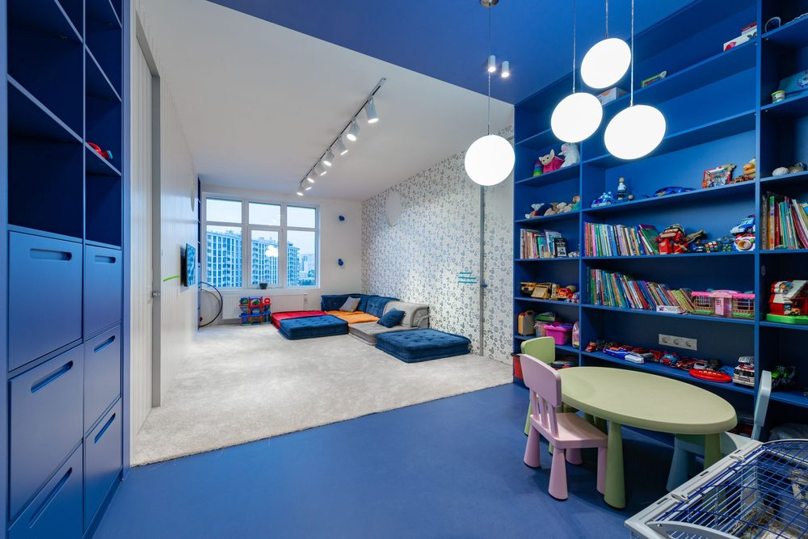
7-Day Plan — Day 5
Sheen Balances Mood And Maintenance
In this apartment
In a family apartment in Delhi, the parents want to ensure that their kids' playroom is both durable and visually appealing. They are considering different sheens for the walls.
Sheen names are product-dependent. Read the manufacturer's cleanability and reflectance claims.
Sheen is an essential variable that can change the perception of color and texture in a room. In the kids' playroom, the family should consider using eggshell for the walls, as it balances wipeability with a soft finish. This sheen is ideal for high-traffic areas where cleanability is a priority.
The family should also assess how the chosen sheen interacts with the room's lighting. If the eggshell finish amplifies any unwanted undertones, they might want to consider a high-quality matte that allows for gentle cleaning without compromising the room's brightness.
For the trim and doors, a semi-gloss or satin finish is recommended for durability. This will help maintain the visual appeal of the playroom while ensuring it can withstand the wear and tear from daily use.
Chapter opener
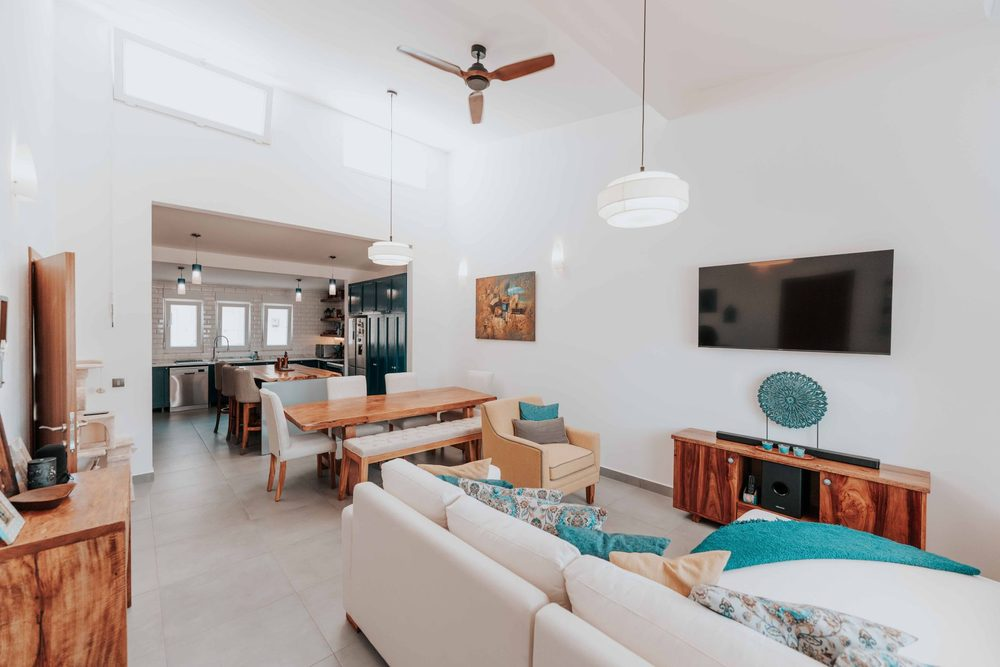
Chapter
Day 6: Map Room-To-Room Flow And Accent Placement
In this chapter, you will learn how to create a cohesive visual journey through your home by mapping sightlines, assigning anchor pathways, and placing accents thoughtfully. By the end, you will have a documented flow plan that ensures your color palette remains steady and serene across all spaces.
7-Day Plan — Day 6 · Sightline Mapping
7-Day Plan — Day 6
Sightline Mapping
In this apartment
Ravi lives in a 1BHK apartment in Pune with a 9-foot living room that opens directly into the dining area. He stands at the entrance of his living room, looking towards the dining space, and realizes he can see both rooms at once. To ensure visual harmony, he sketches a sightline map that highlights the shared wall between the two areas.
Mapping sightlines helps identify which rooms are visible together, allowing for better color coordination.
Start by sketching your floor plan or using builder documents. Identify vantage points where people naturally pause, such as the entryway, main hall, or living room sofa. From these points, draw lines to indicate which rooms are visible simultaneously. In Ravi's case, he marks the shared wall between the living and dining areas, noting how they interact visually.
Highlight shared walls and continuous ceilings in open concept spaces. For traditional layouts, mark doorways and hall transitions. This foundational map will guide your color choices and ensure that adjacent rooms complement each other without abrupt visual breaks.
By understanding sightlines, you can create a cohesive experience that flows smoothly from one room to another, avoiding clashes that disrupt the visual journey.
7-Day Plan — Day 6 · Anchor Pathways
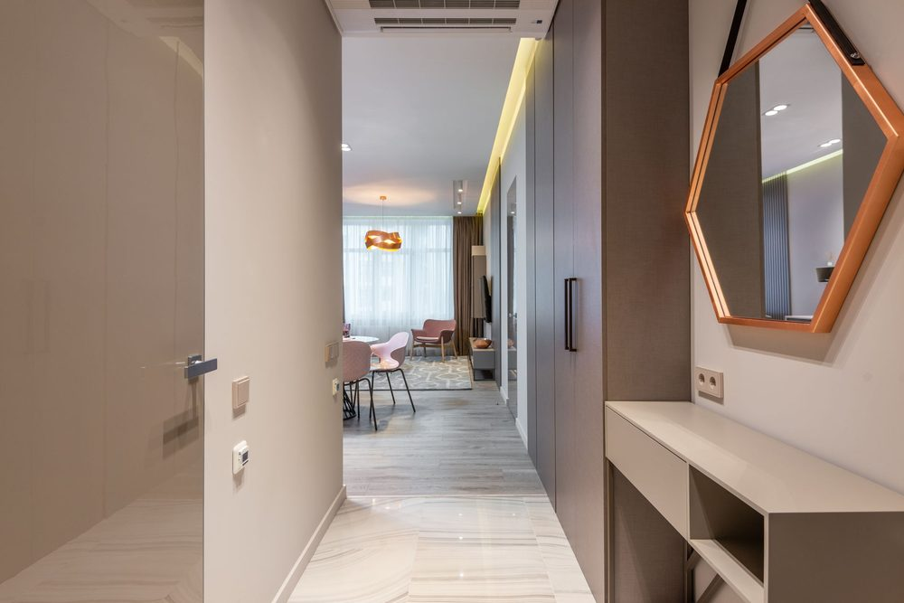
7-Day Plan — Day 6
Anchor Pathways
In this apartment
Anjali resides in a compact 1BHK in Bengaluru where the entryway leads directly into a narrow hallway connecting the living room and kitchen. She decides to use a warm beige as her anchor neutral along the hallway to create a sense of coherence as she moves through the space.
Anchor pathways create coherence by repeating a chosen neutral along primary circulation routes.
Your anchor neutral serves as the melody of your home. Assign it to primary routes such as entryways, hallways, and the core living areas. In Anjali's case, she selects a warm beige that softens the coolness of her north-facing rooms, ensuring a welcoming atmosphere as she enters her home.
If you have two anchors, use them intentionally based on room exposure. For example, a warmer anchor can be used in north-facing private rooms, while a cooler anchor can balance south-facing social spaces that receive strong sunlight. This strategy enhances the overall flow and makes transitions feel designed rather than abrupt.
By repeating your anchor neutral in key areas, you create a visual thread that ties your home together, making it feel more cohesive and intentional.
7-Day Plan — Day 6 · Accent Placement Protocol
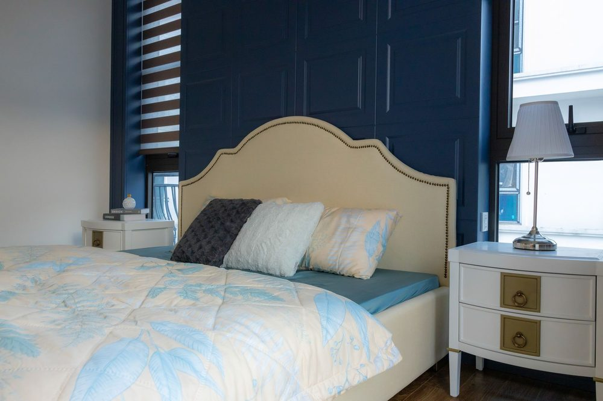
7-Day Plan — Day 6
Accent Placement Protocol
In this apartment
Meera has a small Mumbai flat with a window on only one side. She wants to add accents without overwhelming her space. She decides to place a deep blue accent wall behind her bed and echoes this color in a throw pillow on her sofa, ensuring the accents feel intentional and connected.
Accents should be placed where architecture creates natural breaks to maintain visual calm.
Accents work best where architecture creates natural breaks, such as behind a bed, inside a powder room, or on built-in cabinetry. In Meera's flat, she wisely chooses to place her deep blue accent wall behind the bed, which serves as a focal point in her bedroom without overwhelming the space.
Avoid placing accent walls in open areas unless they terminate at a corner or architectural feature, as this can create abrupt visual interruptions. Meera's choice to echo the deep blue in a throw pillow on her sofa helps connect the accent to the overall color scheme, making it feel intentional rather than isolated.
Limit the number of accent hues to maintain calm; one to three accents throughout the home is sufficient. This restraint allows the accents to stand out without competing for attention, contributing to a serene atmosphere.
Chapter opener
Chapter
Day 7: Finalize Your Palette And Document Standards
Day 7 ends when the palette is locked. That is the end of the 7-day program. Implementation is optional: diagnose, prepare, order, and paint only if you are painting now. The following chapters are not additional program days; they are implementation tools for readers who are painting now.
7-Day Plan — Day 7 · Confirm Your Colors
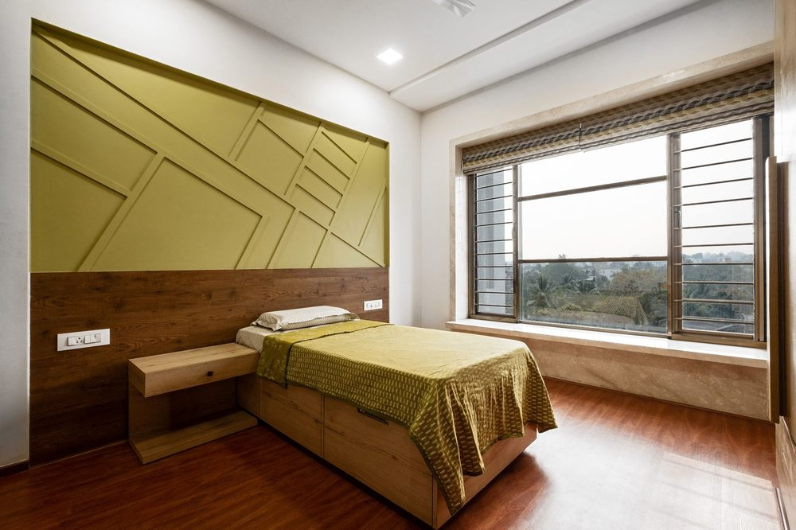
7-Day Plan — Day 7
Confirm Your Colors
In this apartment
Ravi lives in a 1BHK apartment in Pune with a 9-foot living room. He brings his Day 4 color boards into the living room to finalize his choices. After a day of observing the colors in different lighting, he decides on a warm beige that harmonizes with his existing wooden furniture.
Stability under varying light conditions is crucial for color selection.
Start by reviewing your Day 4 sample boards in their intended rooms. Observe the colors in both day and evening light to see how they perform. If two colors are nearly tied, stand them side by side and live with them for twenty-four hours to determine which feels more stable under evening light.
Prioritize harmony with fixed surfaces like flooring and counters. For instance, if your living room has honey oak flooring, choose a wall color that complements this warm tone, ensuring it feels calm and inviting.
Write one-sentence justifications for each choice to anchor your decisions. For example, 'Living Room, Anchor A, stable in day and night, harmonizes with honey oak, feels calm.' This documentation will help you maintain consistency over time.
7-Day Plan — Day 7 · Lock Trim and Ceiling Colors
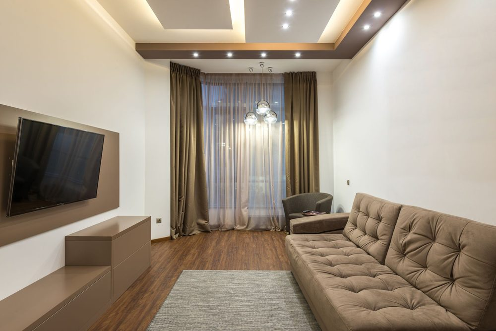
7-Day Plan — Day 7
Lock Trim and Ceiling Colors
In this apartment
Neha, living in a compact flat in Mumbai, checks her trim and ceiling colors against her final wall choices. She notices that her chosen ceiling white causes glare under her bright lights, prompting her to select a softer white for a more cohesive look.
Trim and ceiling colors must complement wall colors to avoid visual discord.
Use your Day 5 decisions as a baseline for trim, ceiling, and door colors. Confirm these against your final wall colors to ensure a clean and harmonious look. Your trim white should sit cleanly against every wall without appearing too creamy or bluish.
Check across multiple rooms, as adjacent surfaces can alter perception. For example, if your living room trim is stark white, it may clash with a warmer wall color, so adjustments may be necessary.
Your ceiling white should reduce glare under downlights, especially in rooms with high lumen output. If you notice any pairing that flashes off, swap in your alternate white and retest immediately.
7-Day Plan — Day 7 · Assign Sheens by Function
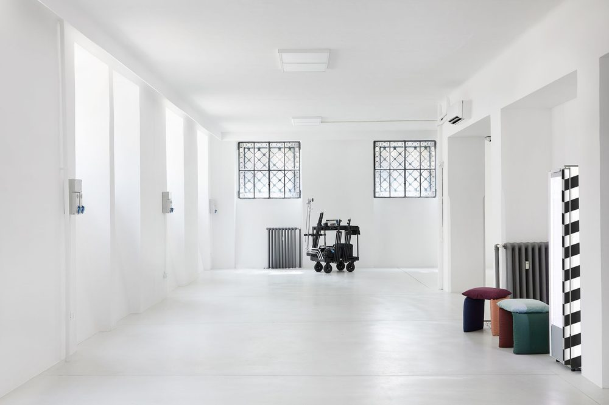
7-Day Plan — Day 7
Assign Sheens by Function
In this apartment
Aditi, who lives in a rental in Bengaluru with a load-bearing wall, uses the Function Based Sheen Selector to assign appropriate sheens for her living room and hallway, ensuring durability and aesthetic appeal.
Assign sheen by room function, then confirm that this product's claims match that job.
Treat sheen labels as product-dependent. Compare the manufacturer's cleanability, washability, and reflectance claims rather than assuming all matte, eggshell, or satin products perform identically. A premium washable matte can out-clean another maker's eggshell. As a tendency, not a law: lower sheen often reduces glare in living and media rooms; a more cleanable sheen often helps hallways; a harder sheen often helps trim and doors — then read the can.
Capture exceptions where necessary. If a room has heavy texture that shines in eggshell, consider moving to a scrubbable matte product to maintain a consistent appearance. Additionally, note primer requirements for different surfaces, such as using bonding primer for glossy surfaces or oil-painted trim.
Write the rationale beside each sheen choice to prevent future second guessing. This documentation will serve as a guide for any future touch-ups or repaints.
7-Day Plan — Day 7 · Build Your Palette Document
7-Day Plan — Day 7
Build Your Palette Document
In this apartment
Suresh, residing in a 1BHK in Chennai, creates a comprehensive palette document that includes a Color List, Room Map, Finish Matrix, and Maintenance Notes to ensure consistency in his home.
The written record needs room, brand, product, code, base, sheen, date, and batch or lot.
Create a palette document that includes several key sections. Start with an Overview that summarizes your anchors and accents, followed by a Color List. For each color record room, brand, product, color code, base, sheen, purchase date, and batch or lot if available, plus LRV and undertone shorthand.
Include a Room Map that specifies which color goes in which room, along with notes on connected sightlines. This will help maintain coherence across spaces. The Finish Matrix should outline the sheen for each component, including walls, trim, ceiling, cabinetry, and doors.
Add Maintenance Notes: cleaning guidance by sheen, touch-up steps, and the same batch or lot recorded on the can. The leftover can is useful; the written record is what you still have if the can is gone.
When this document is complete, the 7-day program is finished. Palette locked. The chapters after this one are not extra days. They are implementation tools if you are painting now.
Chapter opener
Chapter
Troubleshooting: Fixing Undertone Surprises And Legacy Paint
When your carefully curated color palette meets the reality of your home, surprises can arise. This chapter offers a systematic approach to diagnosing and fixing undertone issues and legacy paint problems without the need for a complete repaint.
Toolkit · Understanding Undertone Surprises
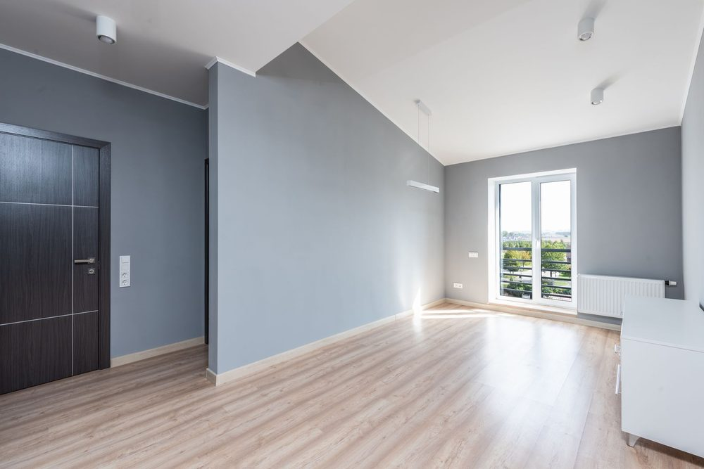
Toolkit
Understanding Undertone Surprises
In this apartment
Riya lives in a 1BHK apartment in Pune with a 9-foot living room. After painting her walls a soft beige, she notices they appear peachy in the evening light. This unexpected shift frustrates her as she had carefully selected the color based on her sample board.
Undertone surprises often arise from changes in environmental conditions rather than the paint itself.
The first step in addressing undertone surprises is to understand that various factors can influence how a color appears on the wall. Lighting type, bulb Kelvin, and color rendering index (CRI) can all exaggerate or mute undertones. Riya's experience illustrates how a color that seemed neutral during the day can take on a different hue at night due to the warm light from her lamps.
To diagnose the issue, Riya should compare her original sample board with the painted wall under identical lighting conditions. This means observing the wall at morning, midday, and evening, ensuring that the light sources are consistent with her Day 7 standards.
If the wall and sample board appear different, Riya must control the variables. Confirming that the wall was primed properly is essential, as paint applied over glossy or chalky finishes can lead to patchiness or darker appearances, which can create false undertone shifts.
Toolkit · Adjusting Lighting for Better Color Perception
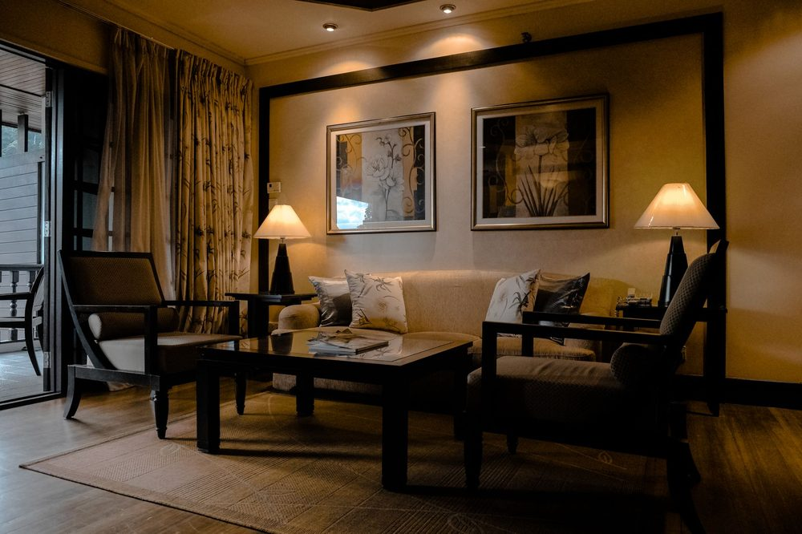
Toolkit
Adjusting Lighting for Better Color Perception
In this apartment
In her Bengaluru rental, Priya finds her living room feels too cool and clinical due to the mix of 4000 Kelvin bulbs in her ceiling lights and 2700 Kelvin in her table lamps. She wants a warmer ambiance for her evening gatherings.
Lighting adjustments can quickly resolve perceived color issues in a room.
Priya can start by standardizing her bulb temperature across the room. By switching all bulbs to 3000 Kelvin, she can create a more inviting atmosphere that complements her chosen paint colors. This simple change can significantly reduce the coolness that makes her walls appear stark and unwelcoming.
It's also important for Priya to consider the CRI of her bulbs. Use CRI 90+ where she is actually judging color or doing color-critical tasks. Mixing widely different Kelvin temperatures in one sightline can still make the same wall look like two colors.
If she uses dimmers, Priya should be aware that some bulbs change color temperature as they dim. Choosing bulbs that maintain their color temperature while dimming will help her achieve the desired warmth consistently throughout the evening.
Toolkit · Refining Sheen to Manage Reflectance
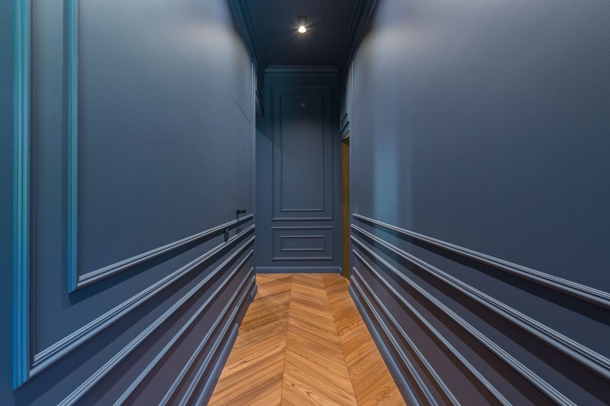
Toolkit
Refining Sheen to Manage Reflectance
In this apartment
In a Mumbai flat, Anjali has painted her hallway a subtle greige but finds the eggshell finish too shiny, making the color appear harsh under downlights.
Adjusting the sheen of your paint can help manage reflectance and improve color perception.
Anjali's experience shows that high sheen finishes can amplify undertones and highlight imperfections. To soften the look of her hallway, she should consider switching from eggshell to a matte finish, which will reduce glare and provide a more muted appearance.
In spaces like hallways where durability is important, Anjali can opt for a scrubbable matte finish. This type of paint provides the necessary resilience while minimizing the reflective quality that can distort color perception.
Additionally, if her trim appears too stark against the greige walls, she might choose a semi-gloss trim in a neutral white with a lower light reflectance value. This adjustment will help maintain durability while softening the contrast between the trim and the walls.
Toolkit · Managing Adjacency and Color Bounce
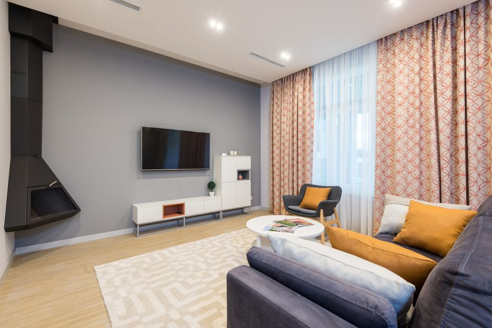
Toolkit
Managing Adjacency and Color Bounce
In this apartment
Suresh, living in a compact 1BHK in Delhi, has bright orange drapes that reflect onto his neutral walls, causing them to appear warmer than intended.
Adjacency of strong colors can influence how paint colors are perceived in a room.
Suresh's situation highlights the importance of managing adjacency. Strong colors in the room, such as his orange drapes, can tint nearby walls and alter their appearance. To mitigate this effect, he should consider balancing the bold drapes with lighter neutral fabrics or adding a neutral runner or area rug to moderate the color bounce from the floor.
Additionally, breaking up long reflective surfaces with bookshelves or wall hangings can help reduce the impact of adjacent colors on the walls. Small placement shifts can often bring a color back into alignment without the need for repainting.
By strategically placing neutral elements in the room, Suresh can create a more cohesive look that allows his chosen wall color to shine without interference from surrounding hues.
Chapter opener
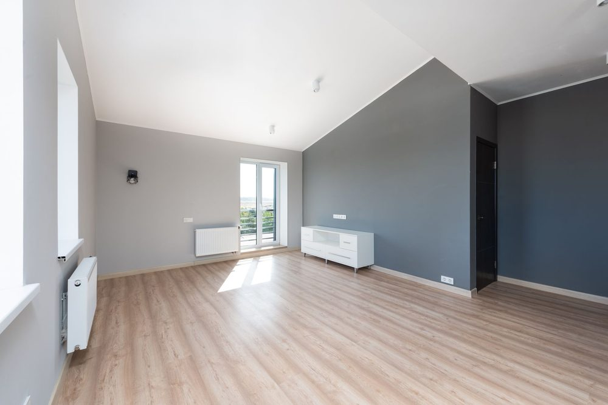
Chapter
After Day 7: Prepare, Order, Paint, And Store
The 7-day program ended when the palette was locked. These pages are not additional program days; they are implementation tools for readers who are painting now. Diagnose, prepare, mask, order by batch, then wait for full cure — not merely dry-to-touch.
After Day 7 · Before paint: prepare the surface
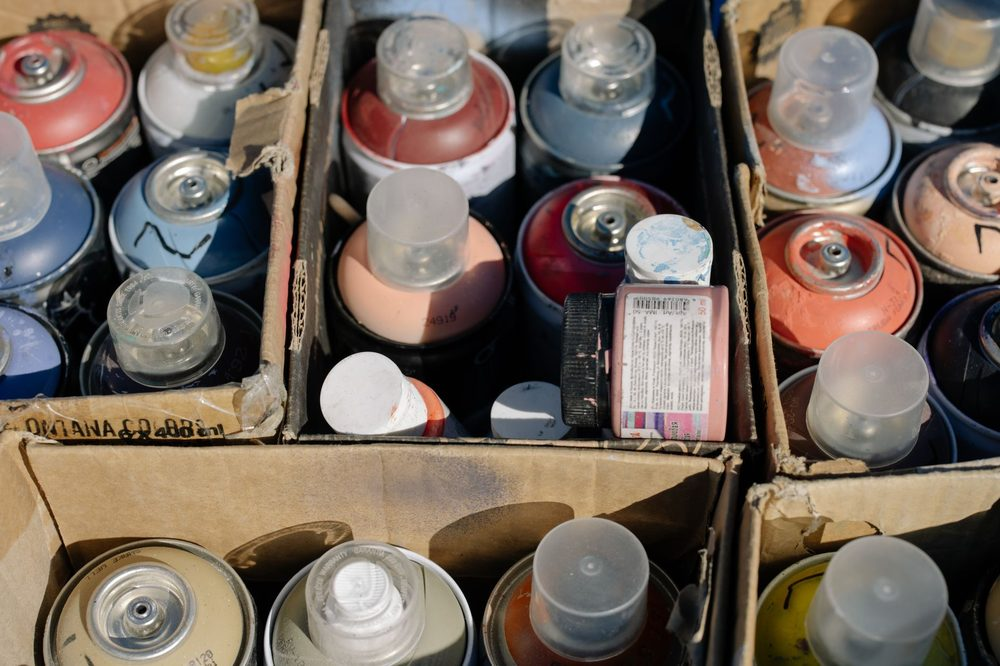
After Day 7
Before paint: prepare the surface
In this apartment
Aditi wants to paint her Pune living room this weekend. A corner by the exterior wall is salt-stained from last monsoon. She stops the color order until the damp is solved.
Protect and mask before you open the can. Do not dry-sand unknown old coatings. Do not paint over mold residue.
Work this sequence on every wall you intend to paint: Clean → Repair → Sand where it is safe to do so → Remove dust → Protect and mask → Prime where required → Paint → Remove masking as the film allows. Primer selection is not a substitute for surface preparation.
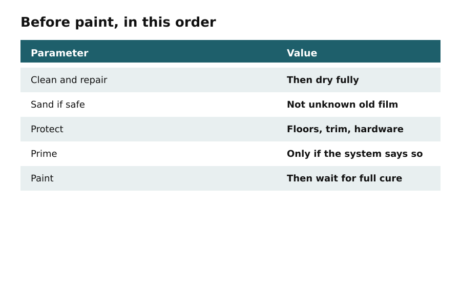
Protect and mask before you open the can. Primer is not prep.
Clean greasy or dusty walls. Scrape loose or peeling paint only where the coating is known and sound enough to disturb. If an existing coating is very old or its composition is unknown, do not aggressively dry-sand or disturb it until you have considered whether lead-containing paint or another hazardous coating may be present. Follow applicable local guidance. Fill nail holes and cracks. Repair damaged plaster. Remove loose wallpaper. Treat stains only after you know the cause. If a wall has persistent dampness, leakage, mold, mildew, efflorescence, or recurring staining — common on bathrooms, kitchens, exterior-facing walls, older apartments, and monsoon-exposed rooms — solve the underlying moisture problem before selecting or applying the final paint system. After the moisture source is corrected, affected surfaces must be appropriately cleaned or remediated and completely dry before painting. Do not simply encapsulate visible mold with ordinary wall paint. A damp wall is not a color problem.
Match primer and topcoat to the existing substrate and the manufacturer's system: water-based versus solvent-based, existing oil or alkyd, masonry, wood, metal, and previously painted surfaces. Primer decision check — use the appropriate primer when required for bare or new substrate, patched areas, stains, water marks after the moisture issue is resolved, glossy or poorly adhering surfaces, significant color changes, or substrate-specific compatibility. Do not assume every previously painted wall needs a separate primer coat; follow the coating manufacturer's system.
Protect floors and furniture, and mask adjacent surfaces — switches, outlets, trim, hardware, doors, and nearby finishes — as appropriate before you open the paint. Contain sanding dust. Safety, one page. Ventilate. Keep children and pets out of the work area. Use the PPE the product label names. Set ladders on a firm, level base and do not overreach. Do not paint around live electrical work — a qualified professional handles wiring. Store paint away from heat and flames. Handle solvent-based products only as the label allows. Do not pour leftover paint or solvents down drains. Dispose of waste according to local rules and the manufacturer.
Do this
Diagnose coating soundness, stains, gloss, substrate, and any dampness.
Clean, repair, sand, and remove dust before any primer.
Choose primer only where the manufacturer's system requires it.
Before you move on
Walls are dry, sound, cleaned or remediated, and dust-free
Moisture and mold are solved — not painted over
Unknown old coatings are not aggressively dry-sanded
Floors, furniture, and adjacent surfaces are protected and masked
Primer chosen from the product system, not by habit
After Day 7 · Ordering With Precision
After Day 7
Ordering With Precision
In this apartment
In a 1BHK apartment in Pune, resident Aditi prepares to paint her living room, ensuring she orders the right quantities of paint for her 9-foot walls.
Calculate quantity from paintable area and the manufacturer's stated coverage. Do not assume a universal gallons-per-square-foot number.
Create an order sheet from the palette guide: brand, product line, color name and code, base, and sheen — the same five fields you used on the sample boards. For Aditi's living room she also lists paintable wall area and primer as its own line if the system requires it.
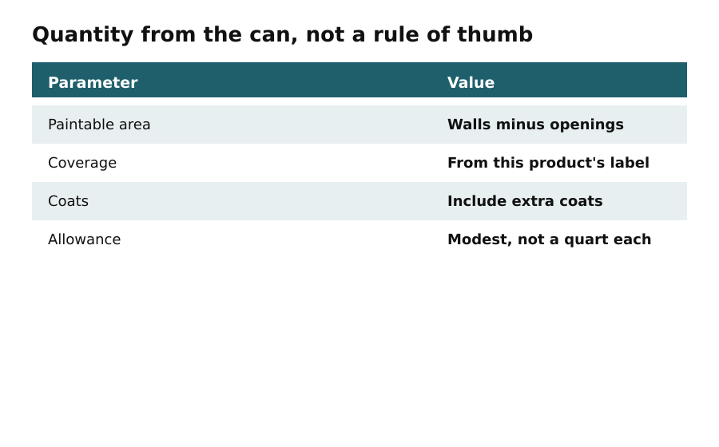
Use the manufacturer's stated coverage, then expect less on porous, textured, repaired, or strongly contrasting surfaces.
Quantity is not a guess. Measure paintable area (walls minus doors, windows, and large niches; add ceiling only if you are painting it). Then: required paint ≈ paintable area ÷ manufacturer's stated coverage per coat × number of coats, plus a reasonable allowance. Count primer separately. Different products cover differently. Use the actual manufacturer's coverage, never a universal square-foot-per-gallon assumption. Actual coverage can be lower on porous, textured, repaired, or strongly contrasting surfaces; use the manufacturer's guidance for those conditions.
Where practical, purchase enough of the same product, color, base, sheen, and batch for a continuous area. If multiple batches must be used, follow the manufacturer's guidance for maintaining consistency. Record room, brand, product, color code, base, sheen, purchase date, and batch or lot if available. Reserve leftover paint for touch-ups according to the size and importance of the area and the manufacturer's storage guidance. Do not order one quart of every color by default. If a painter supplies paint, get written confirmation of brand, product line, color, base, sheen, and batch. If the original product is discontinued, take a physical sample, have it matched, and test the match on a large board before buying gallons.
Do this
List brand, product line, color code, base, and sheen by room.
Calculate quantity from maker coverage × coats, plus a modest allowance.
Keep leftovers only in the amount you can store as the label allows.
Before you move on
Brand, product line, code, base, and sheen match the approved sample
Paintable area recorded; openings subtracted
Quantity from manufacturer coverage × coats + allowance; expect less coverage on texture
Same batch ordered for each continuous area where practical
Room, product, code, sheen, date, and lot recorded
After Day 7 · Organizing And Labeling
After Day 7
Organizing And Labeling
In this apartment
In her Pune apartment, Aditi receives the paint delivery and sorts the cans by room, ensuring everything is clearly labeled for her painting schedule.
Close cans properly. Store as the manufacturer instructs. The dried film on the lid is not a color ID.
As paint arrives, sort cans by room. Label each can with room, color name and code, product line, sheen, base, and date. If several rooms share a color, list them on the can.
Close the lid firmly. Store according to the manufacturer's instructions, protected from freezing and extreme heat. Keep color code and date on the can. Do not identify a color later by looking at leftover paint in the pot — it skins and yellows. Do not store solvent products near heat or flames.
Keep primer on its own shelf with the system note (stain block, bonding, masonry). Dispose of unusable leftovers by local rules. Never pour paint down a drain.
Do this
Sort cans by room upon delivery.
Label each can with room, color, sheen, and date.
Maintain a mapping spreadsheet for color application.
Before you move on
Cans labeled with code, sheen, base, room, and date
Stored per manufacturer; not frozen or overheated
Leftovers not used as a color chip
After Day 7 · Scheduling For Success
After Day 7
Scheduling For Success
In this apartment
Aditi plans her painting schedule, prioritizing her guest room and hallway to minimize disruptions in her Pune apartment.
Group contiguous walls for consistent application. Control batch with the paint you buy. Recoat is not full cure.
Do not schedule painting until prep is finished and any moisture repair has dried as the system requires. Aditi sequences her painting schedule by function and dependency. She starts with the guest room and hallway, where disruptions are minimal, allowing her to validate application techniques and coverage expectations before moving into main living areas.
She coordinates bulb swaps and dimmer installations before painting days, ensuring that the final perception matches her testing conditions. For her open-concept living area, Aditi groups contiguous walls together for consistent application conditions, and she uses compatible paint batches according to the manufacturer's guidance to minimize color variation.
Aditi follows the manufacturer's specified recoat and cure times. Dry-to-touch does not necessarily mean fully cured. She delays cleaning, heavy contact, furniture placement, hanging, and tape until the coating system allows it. Recoat windows are scheduled so second coats happen under consistent conditions.
Do this
Sequence rooms by function and dependency.
Coordinate lighting changes before painting days.
Follow recoat and full-cure times on the can; dry-to-touch is not fully cured.
Before you move on
Schedule painting in low impact rooms first.
Group contiguous walls for consistent application; buy compatible batches for the continuous area.
Plan recoat and cure time; do not push furniture against a merely dry-to-touch wall.
After Day 7 · Quality Checks At Each Step
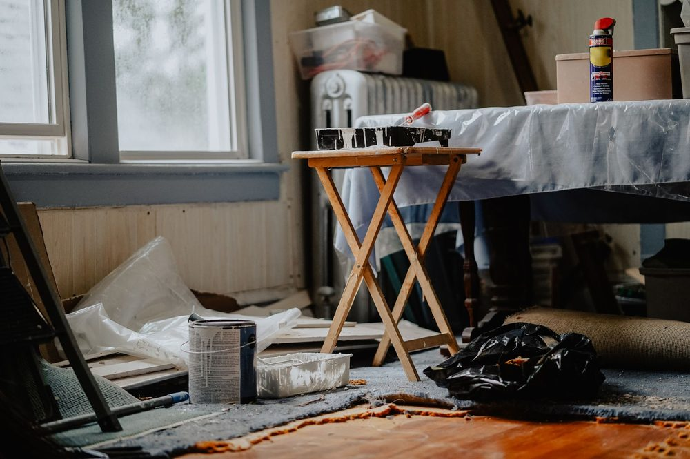
After Day 7
Quality Checks At Each Step
In this apartment
After the first coat in her Pune apartment, Aditi inspects the walls for coverage and sheen before proceeding with the second coat.
Inspect at recoat time. Delay furniture, washing, hanging, and tape until the system is cured.
After the first coat, Aditi inspects the walls for coverage, roller marks, and sheen behavior. She looks closely at edges where walls meet trim and ceiling, ensuring clean lines and consistent sheen for a cohesive perception.
Aditi addresses any issues she finds before the second coat goes on. After the final coats, she evaluates colors at morning, midday, and evening under her Kelvin and CRI standards, confirming they match her tested boards.
This is the time to catch small deviations from her palette guide. Do not return furniture, wash the wall, hang hardware, or apply tape until the coating is cured as the manufacturer specifies. Dry-to-touch is not fully cured.
Do this
Inspect walls after the first coat for coverage and sheen.
Evaluate colors at different times of day after final coats.
Document any adjustments in your palette guide.
Before you move on
Run quality checks after each coat to catch issues early.
Document any adjustments in your palette guide.
Evaluate colors under different lighting conditions.
Chapter opener
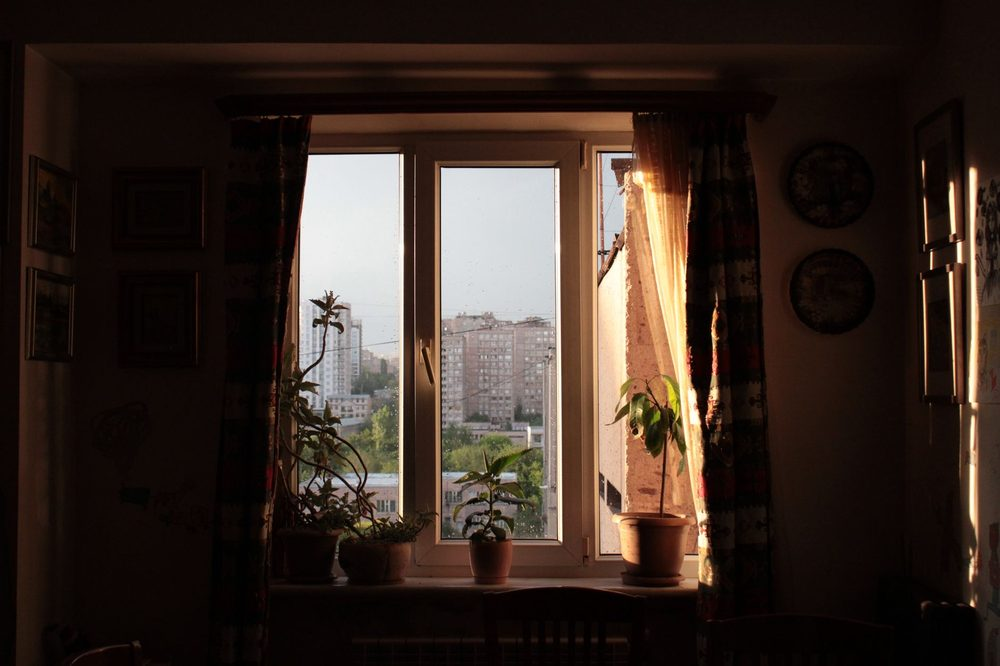
Chapter
Whole-Home Lighting Audit Checklist
Understanding how light interacts with your space is crucial for achieving a cohesive color palette throughout your home. This checklist helps you assess light behavior in every room, ensuring that your paint undertones remain consistent from morning to evening. Use this guide on Day 1 or whenever you change bulbs or fixtures to establish a baseline before color testing.
Workbook · Purpose and Benefits
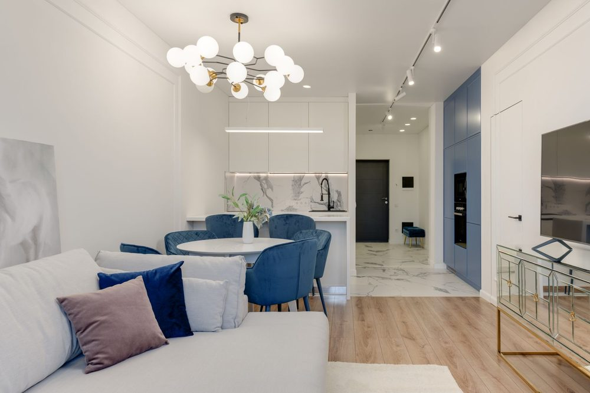
Workbook
Purpose and Benefits
In this apartment
Ravi lives in a 1BHK apartment in Pune. He notices that the colors in his living room look different at various times of the day. To address this, he uses the lighting audit checklist to create a clear exposure map for his space.
A thorough lighting audit clarifies how light affects color perception in your home.
The lighting audit creates a clear exposure map by room, capturing how light behaves from morning to evening. This mapping is essential for maintaining consistent paint undertones throughout your home.
Standardizing bulb temperature and quality stabilizes undertones, ensuring that colors appear as intended regardless of the time of day.
By identifying surfaces that cast color onto walls and trim, you can flag problem zones early, allowing you to correct lighting issues before making paint decisions.
Workbook · How to Use the Checklist
Workbook
How to Use the Checklist
In this apartment
Priya, living in a Bengaluru rental with a load-bearing wall, uses the checklist to assess her lighting conditions. She starts her audit in the morning and records her observations throughout the day.
Systematic observation helps in understanding the light dynamics in your home.
Begin your audit by printing one set of the checklist for each room, including hallways and open-concept zones. This ensures you have a comprehensive view of the lighting in your entire home.
Start your observations in the morning, then repeat quick assessments at midday and again in the evening. This will help you capture how light changes throughout the day.
Photograph each room from the main entry point and from the darkest corner to document the lighting conditions accurately. Record bulb data by fixture to standardize and retest your photos later.
Workbook · Evening Stress Test
Workbook
Evening Stress Test
In this apartment
Sanjay lives in a Mumbai flat with a window on only one side. He conducts the evening stress test to see how his wall colors react to different lighting levels.
Testing your lighting in the evening reveals potential color shifts that may not be apparent during the day.
To perform the evening stress test, place bright white printer paper and soft white tissue on your main wall. This will help you observe how the wall color reacts under typical evening lighting conditions.
Dim your lights to the typical level you would use in the evening and observe the wall. Note whether it appears greener, pinker, or more yellow under these conditions.
Record your sensitivity to these shifts and identify likely undertone changes. This information is crucial for making informed decisions about paint colors.
Workbook · Common Mistakes
Workbook
Common Mistakes
In this apartment
Anjali, who is redecorating her 1BHK in Pune, realizes she overlooked the importance of CRI while focusing only on Kelvin. Her colors look off after painting.
Avoiding common pitfalls ensures a successful lighting audit and color testing process.
One common mistake is ignoring the Color Rendering Index (CRI) while focusing solely on the color temperature (Kelvin). A bulb with a high CRI (aim for 90 plus) is essential for accurate color representation.
Another error is testing paint colors before standardizing your bulbs. This can lead to discrepancies in how colors appear under different lighting conditions.
Lastly, overlooking surfaces that reflect color onto walls can significantly impact the overall appearance of your space. Be sure to log these influences during your audit.
Chapter opener
Chapter
Undertone Decoder Worksheet
This chapter provides a structured approach to accurately identify and label color undertones, ensuring a cohesive palette throughout your home. By following the steps outlined, you can confidently select colors that harmonize with your lighting and existing finishes.
Workbook · Purpose and Benefits
Workbook
Purpose and Benefits
In this apartment
Riya lives in a 1BHK apartment in Pune and wants to repaint her living room. She struggles with choosing the right color that complements her existing furniture and lighting.
Standardizing comparisons removes guesswork in color selection.
Using the Undertone Decoder Worksheet helps Riya eliminate uncertainty in her color choices. By comparing colors against established controls, she can make more informed decisions that align with her home’s lighting and finishes.
This method prevents undertone shifts, ensuring that the colors she selects will look consistent throughout the day, regardless of changes in natural light or artificial lighting.
Additionally, the worksheet speeds up the decision-making process by allowing Riya to rank her color candidates based on a simple scoring system, making it easier to choose the right shade.
Workbook · How to Use the Worksheet
Workbook
How to Use the Worksheet
In this apartment
Vikram is renting a flat in Bengaluru with a load-bearing wall that limits his design options. He wants to ensure the new paint color works well with the existing elements in his living space.
Following a structured process ensures thorough evaluation of color candidates.
To begin, Vikram gathers large samples of paint colors, along with his three control colors: clean white, reference neutral gray, and warm white. He sets up his workspace near the target area, ensuring he has both daylight and his lamps to assess the colors accurately.
He completes Sections 1 through 7 of the worksheet for each candidate color, making sure to note the impressions next to each control. This systematic approach helps him shortlist only those colors that pass all checks and score high on the evaluation scale.
By the end of the process, Vikram will have a clear understanding of which colors work best in his space, allowing him to make a confident decision that enhances his apartment's aesthetic.
Workbook · Main Content: The Worksheet
Workbook
Main Content: The Worksheet
In this apartment
Anjali is preparing to paint her Mumbai flat, which has a window on only one side. She needs to ensure that the colors she chooses will look good in the limited light available.
Using a systematic worksheet helps identify the best color options for specific lighting conditions.
Anjali starts with Section 1, Control Setup, by placing her clean white, reference neutral gray, and warm white samples side by side. This visual check allows her to confirm clear differences between the controls, which is essential for accurate comparisons.
Next, she moves to the Side by Side Comparison Grid in Section 2, where she records her impressions of each candidate color against the controls. This includes noting whether a color appears crisp, creamy, or has any biases like greenish or rosy undertones.
In Section 3, she conducts a Metamerism Check under her specific lighting conditions, noting any shifts in color perception at different Kelvin levels. This step is crucial for Anjali, as it helps her understand how the colors will behave in her unique lighting situation.
Workbook · Tips for Success
Workbook
Tips for Success
In this apartment
Meera is preparing to choose colors for her new apartment in Chennai. She wants to ensure she makes the best choices without any regrets later.
Following best practices enhances the accuracy of color selection.
Meera decides to use letter size or larger samples for her evaluations, as this allows for a better visual comparison against the control colors. Larger samples provide a clearer view of the undertones and how they interact with the light in her apartment.
She also makes it a point to always compare her candidate colors to the three controls. This consistent practice helps her avoid any biases that might arise from personal preferences or brand names.
Finally, Meera photographs each test with notes for recall, ensuring she has a visual reference to look back on when making her final decisions. This documentation will be invaluable as she moves forward with her color selections.
Workbook · Common Mistakes
Workbook
Common Mistakes
In this apartment
Raj is excited to paint his new flat in Delhi but is unaware of the common pitfalls in color selection.
Avoiding common mistakes leads to better color choices.
One common mistake Raj should avoid is skipping the folded edge test. This test is crucial for confirming the bias of a color, and neglecting it can lead to misjudgments about how a color will appear in his space.
Another pitfall is judging colors from a single light source. Raj should test colors under various lighting conditions to ensure he understands how they will look throughout the day and night.
Lastly, he must be cautious about letting brand names bias his perception. Focusing solely on the color and its undertones, rather than the brand, will help him make a more objective choice.
Chapter opener
Chapter
Large-Sample Testing Guide
This guide helps you conduct large-scale color tests to ensure your chosen palette performs well in your home environment. By evaluating colors on large boards, you can see how they interact with your lighting and surroundings, leading to more informed decisions.
Workbook · Purpose and Benefits
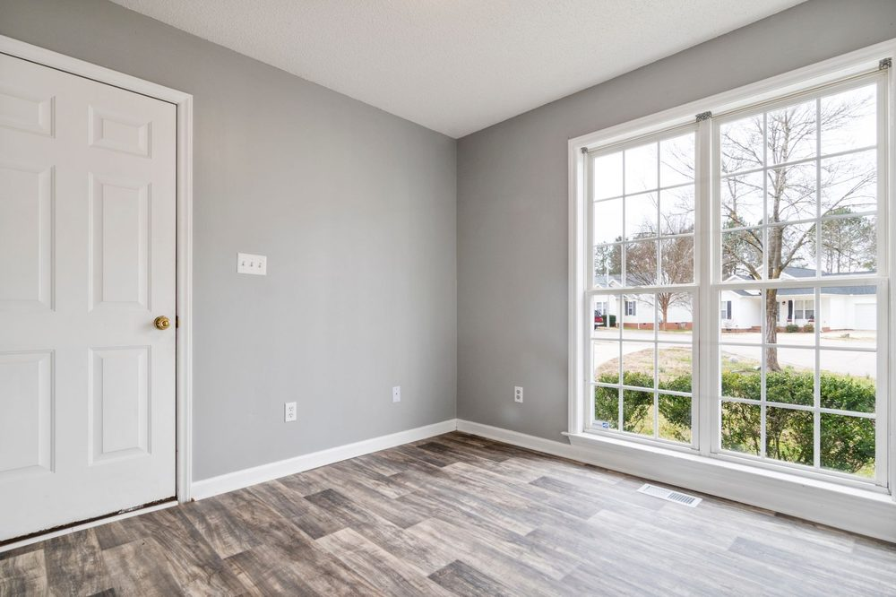
Workbook
Purpose and Benefits
In this apartment
In a 1BHK apartment in Pune, resident Priya wants to refresh her living room. She decides to test paint colors to see how they look in her space throughout the day.
Sampling colors on large boards helps reveal their true behavior under different lighting conditions.
This guide turns sampling into a reliable experiment. It reveals color behavior in morning, midday, and evening, controls adjacency, and documents results so decisions are objective. It protects against undertones that shift, whites that yellow, and sheens that glare.
By observing colors in different lighting, you can ensure that your choices remain cohesive across your home. This method allows you to see how colors interact with your existing decor and lighting, leading to a more harmonious palette.
Testing colors on large boards rather than small chips provides a more accurate representation of how they will look on your walls. This approach minimizes surprises and helps you make confident decisions.
Workbook · How to Use
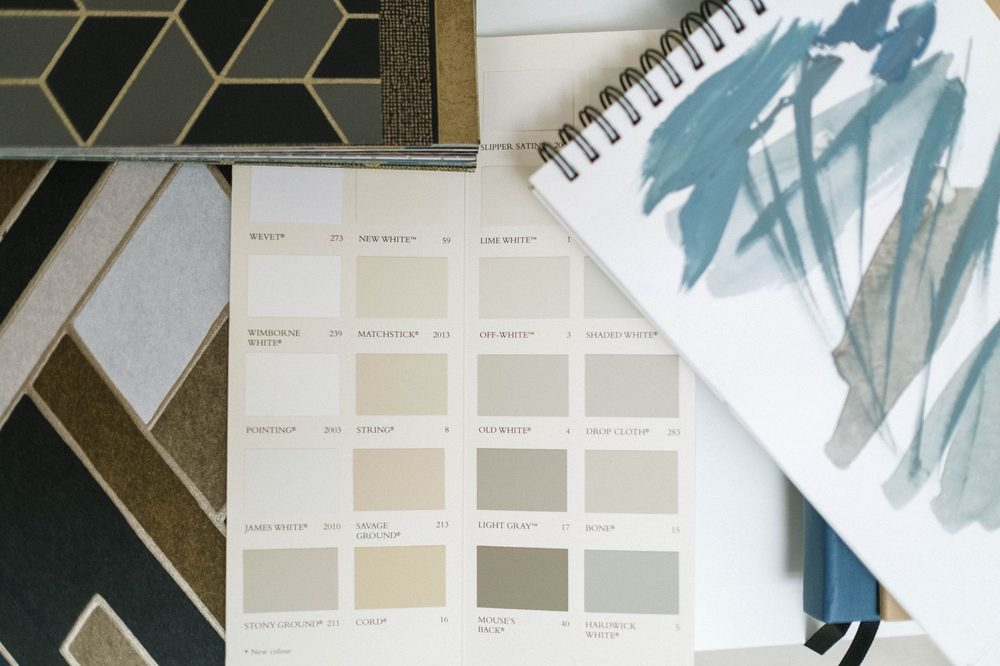
Workbook
How to Use
In this apartment
In her Pune apartment, Priya prepares to paint her boards, ensuring she has all materials ready for an effective testing process.
Follow a systematic approach to ensure accurate color testing results.
Gather materials and clear a neutral testing area. You will need boards measuring 24 by 36 inches, rollers, trays, brushes, sample paints, painter's tape, and a notebook for observations.
On day one, paint the boards and allow for full drying time. Ensure you leave a clean white border using tape to maintain a buffer between the test colors and the background, which helps in accurate perception of the colors.
On days two and three, observe the colors at different times of the day: morning, midday, and evening. Take notes on how the colors appear under varying light conditions, noting warmth or coolness, clarity, and any shadows.
Workbook · Elimination Criteria
Workbook
Elimination Criteria
In this apartment
After observing the colors in her Pune apartment, Priya is ready to eliminate the colors that didn't perform well under different lighting conditions.
Establish clear criteria for eliminating colors that do not meet your expectations.
After observing the colors, it's time to apply your elimination criteria. Cut colors that gray out or go neon, as these can clash with your existing decor and create an undesirable effect.
Additionally, consider the undertones of each color. If a color's undertone clashes with flooring, counters, or fixed finishes, it should be eliminated from your choices. This step is crucial for maintaining a cohesive look throughout your space.
Finally, assess the sheen of each color. If a sheen creates hotspots or texture issues, it may not be suitable for your walls. Document your findings and prepare to select your winners for anchors, trim, and accents.
Workbook · Tips for Success
Workbook
Tips for Success
In this apartment
Priya reflects on her color testing process in her Pune apartment, considering the best practices to ensure success in her color selection.
Implementing effective strategies can enhance the color testing experience and outcomes.
Limit your color candidates to three to five per room to avoid fatigue and confusion during the selection process. This helps you focus on the most promising options without feeling overwhelmed.
Observe the colors on both cloudy and sunny days if possible. Different weather conditions can significantly affect how colors appear, so it's beneficial to see them in varying light.
Stand back about ten feet from the boards, then move closer to get a better perspective. This distance helps you assess how the colors work together from a room's vantage point.
Chapter opener
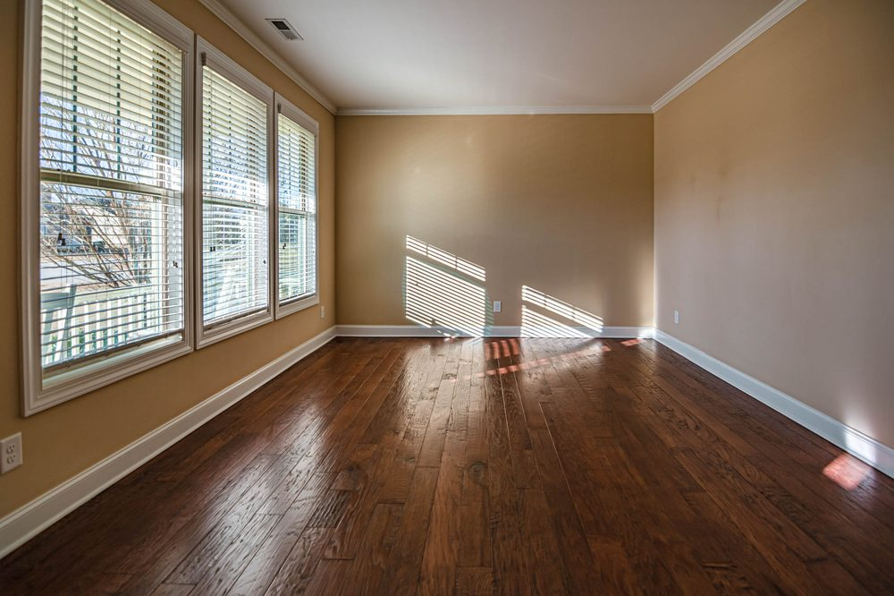
Chapter
Trim and Sheen Decision Matrix
This chapter guides you through the process of selecting and documenting trim, ceiling, and door colors and their respective sheens to ensure a cohesive look throughout your home. By following the Trim and Sheen Decision Matrix, you can maintain consistency in your color choices while considering the unique lighting and functional needs of each room.
Workbook · Understanding the Matrix
Workbook
Understanding the Matrix
In this apartment
In her 1BHK apartment in Pune, Priya walks through her living room, which measures 9 feet by 12 feet, with wall samples in hand. She needs to finalize the trim and ceiling colors to match her chosen wall paint.
A well-documented decision matrix ensures color compatibility and consistency across your home.
On Day 5, walk through each room with your wall samples and selected whites. Fill in the template fields for each room, including the room name, wall color, trim white, ceiling white, and door color.
Choose the sheens for the walls, trim, and ceiling based on their intended use. For example, a wall sheen of eggshell is ideal for cleanability, while a trim sheen of satin provides a subtle sheen without excessive glare.
Record the lighting factors for each room, including the Kelvin of overhead lights and the CRI rating. This information is crucial for understanding how colors will appear under different lighting conditions.
Before you move on
Walk through each room with wall samples and selected whites.
Fill in the template fields for each room.
Record lighting factors and function flags for each room.
Workbook · Compatibility Checks
Workbook
Compatibility Checks
In this apartment
In her Bengaluru rental, Meera is faced with a load-bearing wall that limits her color choices. She carefully checks the compatibility of her selected trim and ceiling colors against the wall paint.
Conducting compatibility checks prevents mismatched colors that can disrupt the overall aesthetic of your space.
For each room, assess the compatibility of the trim white over the wall sample. Document whether it passes or fails the test, and take notes on any discrepancies.
Next, check the ceiling white against the wall sample. This step is crucial, especially in rooms with limited natural light, as it can affect how the ceiling color interacts with the walls.
Finally, evaluate the door color against the trim. Ensure that the colors complement each other and maintain a cohesive look throughout the space.
Before you move on
Assess the trim white over the wall sample and document results.
Check the ceiling white against the wall sample and take notes.
Evaluate the door color against the trim for compatibility.
Workbook · Finalizing Decisions
Workbook
Finalizing Decisions
In this apartment
On Day 7, Raj is ready to finalize his color choices in his Mumbai flat, which has a window on only one side. He reviews his decisions and prepares to share them with the painters.
Finalizing your decisions ensures that all aspects of your color choices are documented and ready for implementation.
Review each room's decisions, confirming that all compatibility checks have passed. Add batch numbers for the paint to ensure consistency during application.
Generate a summary page that includes the default trim white and sheen, ceiling white and sheen, and door color and sheen. This summary will serve as a reference for the painters.
Document any exceptions, such as accent colors for specific rooms or specialty finishes, to guide future touch-ups and maintenance.